← Index · ← Previous · Next →
Authors: Sourav Dutta, Anubhab Rudra, Manav Seksaria, Anil Prabhakar, Prabha Mandayam
Type: theory · Category: quantum information and computing · PDF: https://arxiv.org/pdf/2609.15924v1
Analysis basis: full PDF text, analyzed in chunks
Topic relevance: QC/QI experiment 2/5 · correlated / nonlocal dissipation 1/5 · driven-dissipative phase transition 1/5 · methods for driven-dissipative 1/5
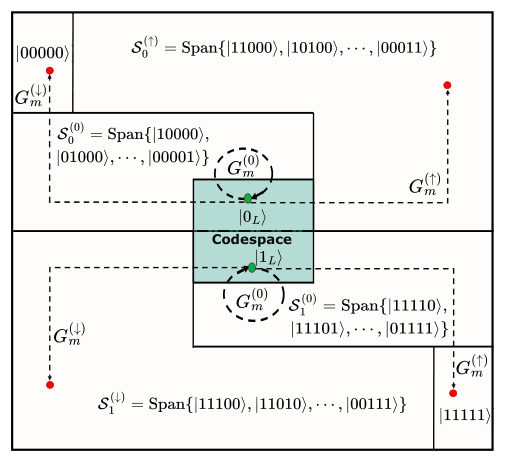
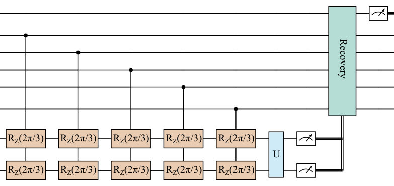
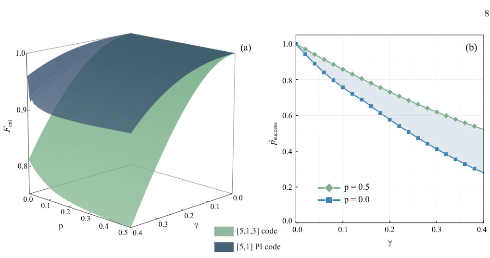
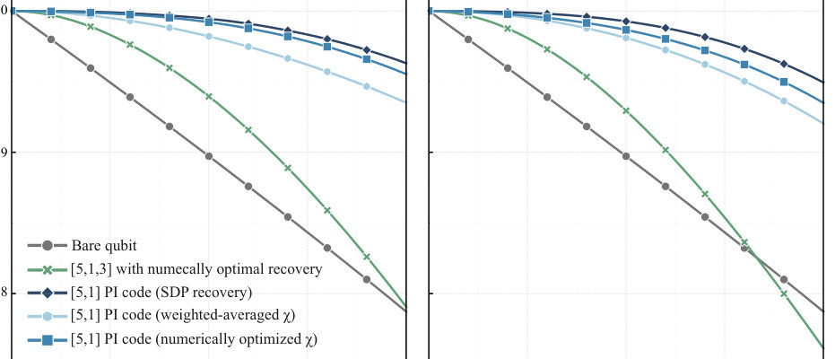
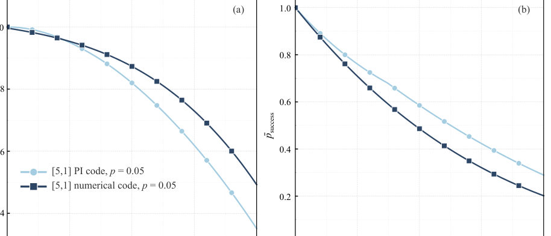
Summary. This work develops the Probabilistic Approximate Quantum Error Correction (PAQEC) framework to combat Generalized Amplitude-damping (GAD) noise. By optimizing recovery maps using semidefinite programming, the authors construct a five-qubit code that achieves superior, quadratic scaling of fidelity loss compared to existing methods. This offers a resource-efficient path toward building reliable quantum computers for near-term devices.
Why it may be interesting. The focus on GAD noise, which is highly relevant to superconducting and trapped-ion quantum hardware, provides a concrete, realistic noise model for developing fault-tolerant quantum computation protocols.
Main problem. The paper addresses the challenge of protecting quantum information from Generalized Amplitude-damping (GAD) noise, a realistic source of decoherence, using Quantum Error Correcting (QEC) codes.
Main result. The authors introduce Probabilistic Approximate Quantum Error Correction (PAQEC) and demonstrate a five-qubit code that achieves a fidelity loss quadratic in the damping strength, significantly outperforming conventional codes.
Method. The framework combines approximate QEC with post-selection recovery, formulated and optimized using numerical techniques based on Charnes–Cooper and semidefinite programming.
Model / system. The system involves qubits subjected to GAD noise, modeled by specific Kraus operators involving damping strength ($\gamma$) and temperature-dependent parameters ($p$). The core structure is a five-qubit permutation-invariant code.
Key observables. Entanglement fidelity ($F_{ ext{ent}}$), probability of successful recovery, and the scaling of fidelity loss with noise strength.
Important parameters / regimes. Damping strength ($\gamma$), temperature-related parameter ($p$), and the noise parameters $(\gamma', p')$ used during optimization.
Assumptions / limitations. Conventional deterministic QEC codes fail to correct for first-order GAD errors; the PAQEC framework is proposed to overcome these limitations.
Figures summary. Figures illustrate the action of GAD errors on codewords, the syndrome-based recovery protocol using ancilla qubits, and comparisons showing the numerical code outperforming the standard PI code in fidelity.
Paper structure. The paper surveys existing AQEC/PQEC methods and GAD noise, introduces the five-qubit PI code, formally defines PAQEC conditions, and finally uses semidefinite programming to find optimal recovery maps and codes.
Quantum error correcting (QEC) plays a crucial role in protecting quantum information against decoherence and enabling scalable, reliable quantum computing. One of the most realistic and ubiquitous sources of noise affecting quantum hardware today is generalized amplitude-damping (GAD) noise. Conventional, deterministic QEC codes struggle to correct for GAD noise because of their inherent structure, leading to fidelity losses that scale linearly with the damping strength. In this work, we introduce the framework of probabilistic approximate quantum error correction (PAQEC), that combines the flexibility of approximate QEC with the potential of post-selected recovery, enabling high-fidelity, resource-efficient error correction. We construct a five-qubit permutation-invariant code that, under probabilistic recovery, achieves a fidelity loss quadratic in the damping strength, thus outperforming existing QEC codes. Formulating PAQEC as an optimization problem, we present a numerical technique based on Charnes-Cooper and semidefinite programming to identify the optimal recovery map for any PAQEC code. Our results establish PAQEC as a powerful tool for developing resource-efficient, high-fidelity quantum codes tailored to realistic noise, with promising implications for near-term quantum devices and future fault-tolerant architectures.
Authors: Gaia De Paciani, Gesa Dünnweber, Johannes Poersch, Simon M. Linsel, Henning Schlömer, Fabian Grusdt
Type: theory · Category: strongly correlated electrons · PDF: https://arxiv.org/pdf/2609.13391v1
Analysis basis: full PDF text, analyzed in chunks
Topic relevance: analog quantum simulation 2/5 · Frenkel-Kontorova 1/5 · methods for driven-dissipative 1/5
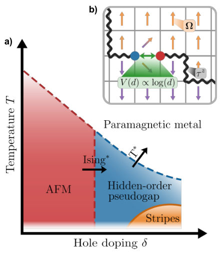
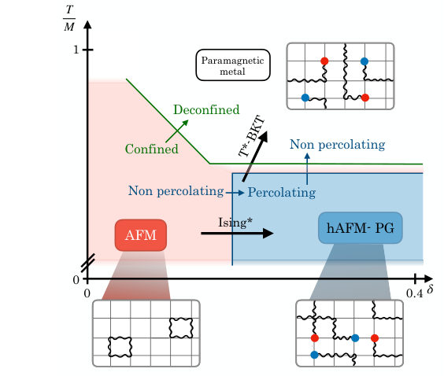
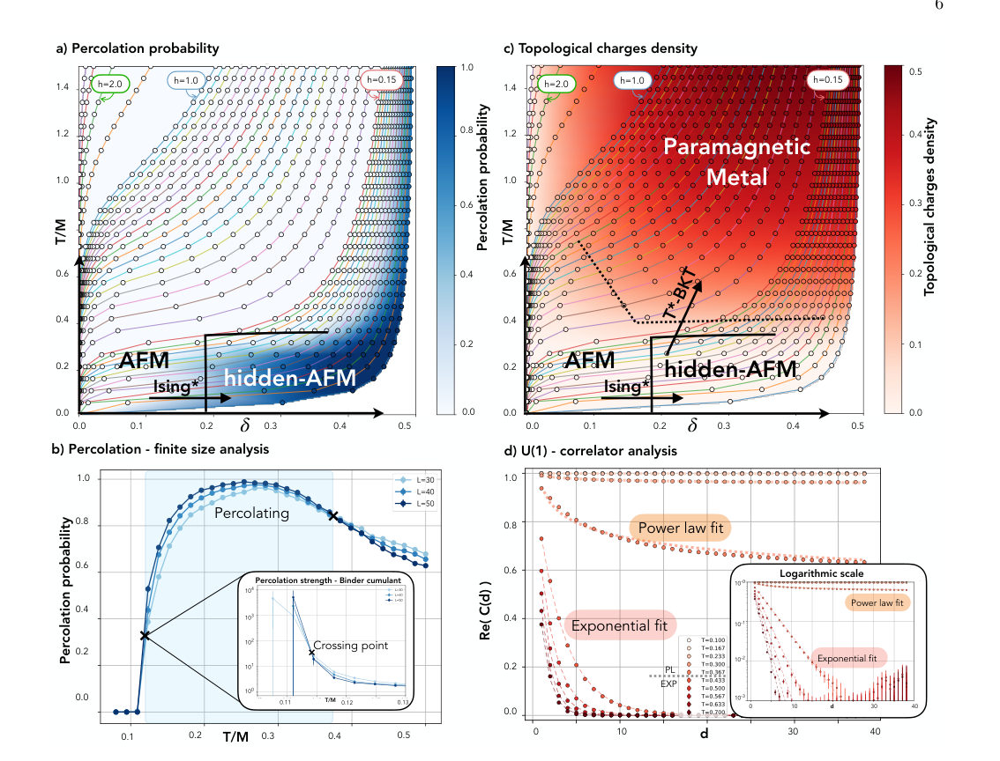
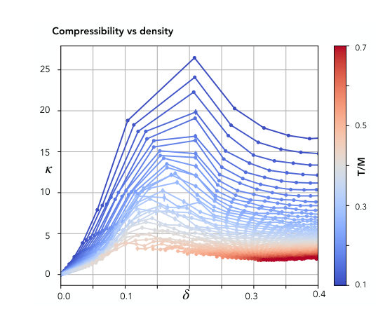
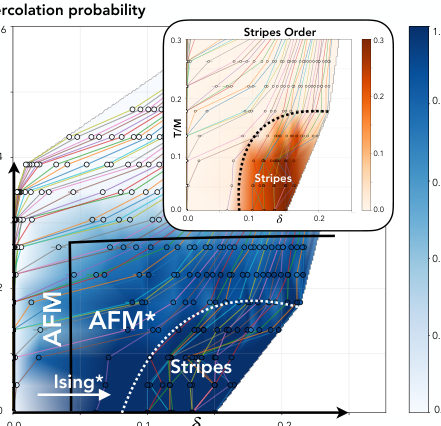
Summary. This work develops an effective string model for doped antiferromagnets to explain the pseudogap phase. By treating fluctuating Néel order as domain walls with vortex ends, the authors map the pseudogap transition onto a topological BKT-type crossover. The findings suggest that the pseudogap is governed by the confinement of these string ends rather than simple symmetry breaking.
Why it may be interesting. The use of topological concepts (vortices, confinement/deconfinement) to describe a phase transition in a strongly correlated material is highly relevant to understanding emergent order in quantum many-body systems.
Main problem. The paper addresses the long-standing puzzle of the microscopic origin of the pseudogap phase in cuprate superconductors, linking it to magnetic fluctuations and doping.
Main result. The pseudogap boundary ($T^*$) is identified as a topological crossover associated with the confinement/deconfinement of vortex ends in the effective string model, rather than the onset of a local order parameter.
Method. The authors developed an effective model based on fluctuating Néel domain walls (stripes) and analyzed its phase diagram using classical Monte Carlo simulations.
Model / system. The system is a doped antiferromagnet modeled by an effective string theory where domain walls are treated as 1D strings. The Hamiltonian incorporates terms for the spin background and vortex interactions, leading to a lattice gauge theory description.
Key observables. Percolation-based geometric order parameters (POPs), the $U(1)$ correlation function decay (algebraic vs. exponential), and the compressibility (showing a Widom line).
Important parameters / regimes. Doping ($\delta$), temperature ($T$), and the ratio of correlation lengths ($\xi^* \gg d$).
Assumptions / limitations. The effective model assumes the correlation length of the spin background ($\xi^*$) is much larger than the separation of the open string ends ($d$).
Figures summary. Figure 1 schematically illustrates the phase diagram, distinguishing between the spin-pseudogap regime and the hidden-order pseudogap phase via fluctuating stripes and vortex ends.
Paper structure. The paper develops the effective string model, analyzes the phase diagram using Monte Carlo simulations to detect percolation and BKT crossovers, and interprets these transitions in the context of the pseudogap physics.
The microscopic origin of the pseudogap phase constitutes a longstanding puzzle related to the emergence of high-temperature superconductivity in cuprate materials. In this work, we develop an effective model for doped antiferromagnets in terms of fluctuating stripes, or string-like domain walls, which obscure the antiferromagnetic order of the spin background. The open ends of such domain walls of the N'eel order are treated as vortices in the resulting lattice gauge theory. We numerically evaluate the phase diagram by classical Monte Carlo simulations, using percolation-based geometric order parameters to diagnose hidden N'eel order. At high temperatures, we identify a BKT-type crossover in which the domain wall ends become deconfined. We interpret this as the $T^*$ crossover from the hidden order regime to the paramagnetic metal above. At low temperatures, we identify stripe instabilities. Predictions of our effective model can be tested in ultracold fermion quantum simulators.
Authors: Yifan Tang, Ingo Roth, Philippe Faist, Zi-Wen Liu, Jens Eisert, Zhenhuan Liu
Type: theory · Category: quantum information and computing · PDF: https://arxiv.org/pdf/2609.15059v1
Analysis basis: full PDF text, analyzed in chunks
Topic relevance: analog quantum simulation 2/5 · Keldysh / 2PI / non-Gaussian methods 1/5 · quantum measurements 1/5
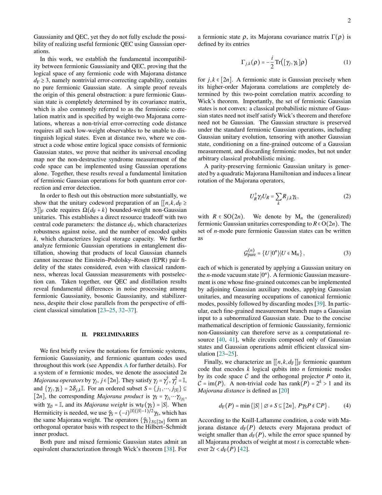
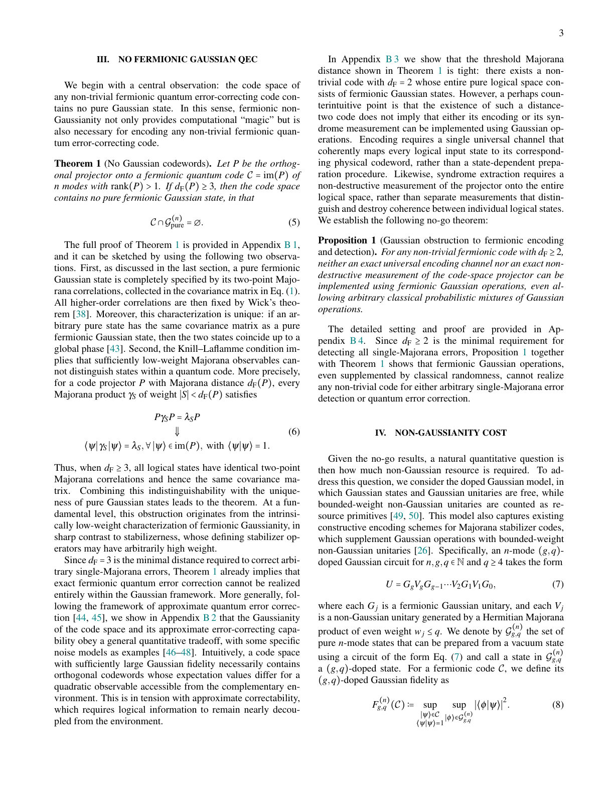
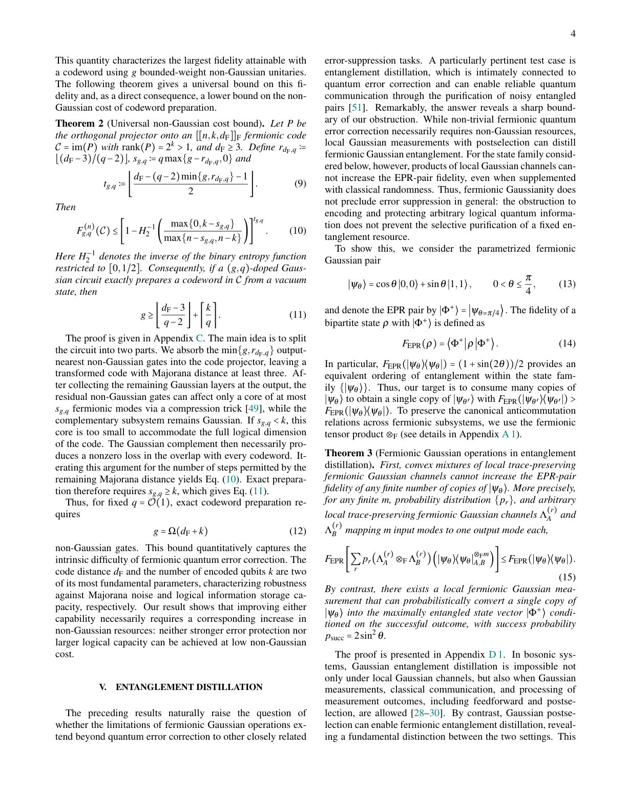
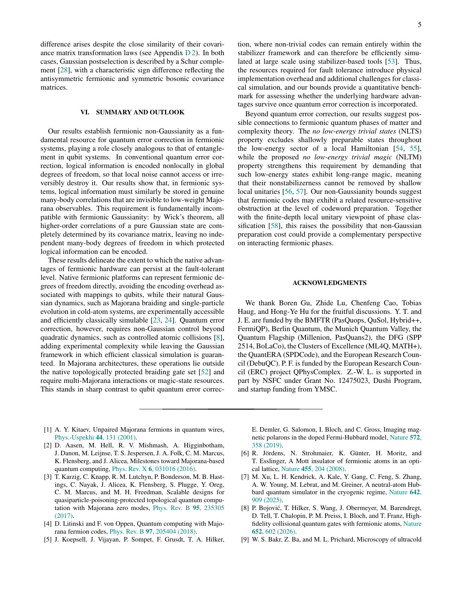
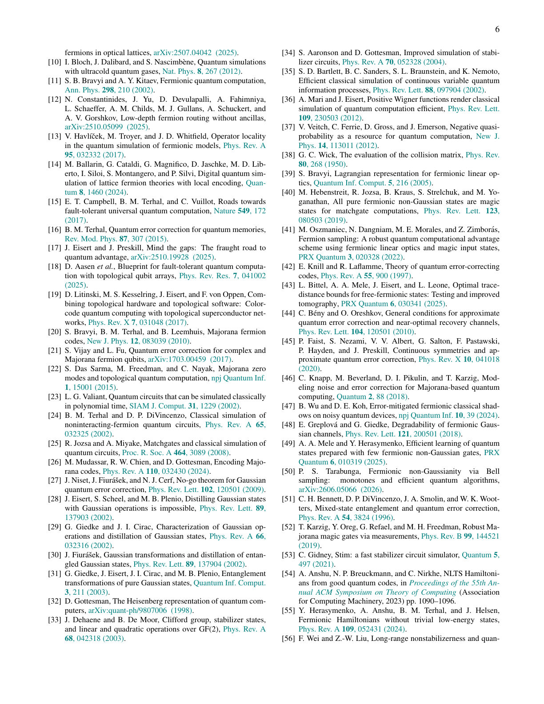
Summary. This paper proves that fermionic quantum error correction cannot be achieved using only free-fermion (Gaussian) dynamics, unlike the standard qubit model. It establishes a fundamental resource overhead, showing that the required non-Gaussian gates scale linearly with the desired error protection strength and logical capacity. This highlights a major physical hurdle for building scalable quantum computers based on fermionic systems.
Why it may be interesting. It provides a rigorous theoretical constraint on the physical implementation of quantum computation using fermionic systems, suggesting that achieving high error correction thresholds requires going beyond simple quadratic Hamiltonians.
Main problem. To determine the fundamental physical resources required for implementing quantum error correction (QEC) on fermionic platforms.
Main result. Exact fermionic QEC necessarily requires non-Gaussian operations, and the required overhead scales at least linearly with both the code distance and the number of encoded modes.
Method. The analysis uses fundamental incompatibility arguments between fermionic error correction and Wick's theorem, alongside bounding the fidelity achievable using Gaussian operations.
Model / system. The study focuses on fermionic quantum codes, which can be realized on platforms like Majorana-based qubits or fermionic cold atoms. The dynamics are contrasted between free-fermion (Gaussian) regimes and general non-Gaussian operations.
Key observables. Code distance ($d_F$), logical capacity ($k$), Gaussian fidelity ($F^{(g,q)}_{g,q}(C)$), and the required number of non-Gaussian gates.
Important parameters / regimes. Code distance ($d_F \geq 3$), number of encoded modes ($n$), and the resource scaling $\Omega(d_F + k)$.
Assumptions / limitations. The analysis contrasts the fermionic setting with the qubit setting (where stabilizer operations are Gaussian) and examines the limitations of Gaussian operations in both QEC and entanglement distillation.
Figures summary. No specific figure summaries were extracted, but the notes detail mathematical proofs involving projectors, isometries, and fidelity bounds.
Paper structure. The paper progresses by first establishing the necessity of non-Gaussian operations for QEC (Theorem 1), then quantifying the resource cost (Theorem 2), and finally contrasting this with the capabilities of Gaussian operations in entanglement distillation (Theorem 3).
Fermionic platforms offer compelling architectures for quantum computing, ranging from topologically protected Majorana-based qubits to fermionic cold atoms. To achieve scalability, however, they require quantum error correction. In this work, we prove that any exact and sufficiently accurate approximate fermionic quantum error correction necessarily requires non-Gaussian operations, beyond the free-fermion regime of quadratic dynamics. This is in sharp contrast to the qubit setting, where the efficiently classically simulable stabilizer operations form the standard framework for quantum error correction. Specifically, we show that the logical space of any non-trivial fermionic error-correcting code contains no pure fermionic Gaussian state, utilizing a fundamental incompatibility between fermionic error correction and Wick's theorem. We further show that the required number of bounded-weight non-Gaussian gates for unitary codeword preparation grows at least linearly with both the code distance and the number of encoded modes, revealing an intrinsic resource overhead that increases simultaneously with error-protection strength and logical capacity. Furthermore, we analyze the performance of fermionic Gaussian operations in entanglement distillation, revealing a distinction from their bosonic counterparts. Our results reveal fundamental difficulties for fermionic error correction from the perspectives of both physical implementation and classical simulation, suggesting connections to fermionic phases of matter and state preparation complexity.
Authors: Piotr Stanisław Topa
Type: theory · Category: other · PDF: https://arxiv.org/pdf/2609.14749v1
Analysis basis: full PDF text, analyzed in chunks
Topic relevance: analog quantum simulation 2/5 · Keldysh / 2PI / non-Gaussian methods 1/5 · methods for driven-dissipative 1/5
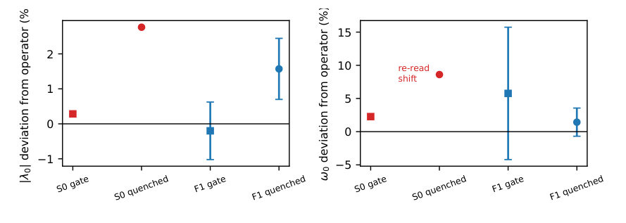
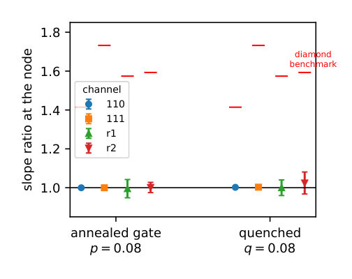
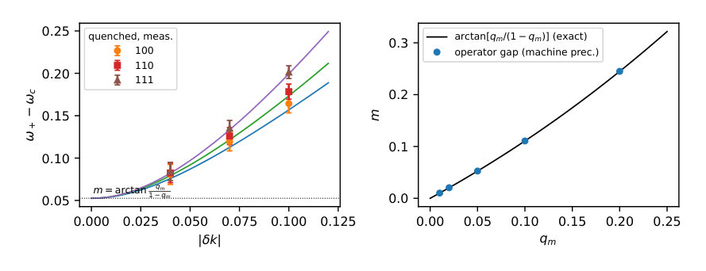
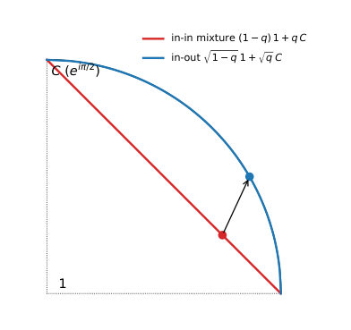
Summary. This paper constructs a specific 3D probabilistic cellular automaton, called the 'coincube,' to model fermionic quantum field theories. It successfully demonstrates that the automaton supports a single Weyl fermion with exact relativistic kinematics. The work is significant for establishing a deep, non-trivial connection between classical computation models and fundamental quantum field theory.
Why it may be interesting. This work provides a concrete, non-standard lattice realization of relativistic fermionic dynamics using classical probabilistic rules, offering a novel computational framework for studying QFTs.
Main problem. The paper tackles the open problem of constructing an exact equivalence between fermionic Quantum Field Theories (QFTs) in three dimensions and probabilistic cellular automata (PCA).
Main result. The authors construct a 'coincube' layered automaton that realizes the free single-fermion sector with exact relativistic kinematics, demonstrating an isotropic Weyl cone.
Method. The construction uses a layered automaton operating on a 3D cubic lattice, where environment bits stream outrunning the carrier's causal cone to ensure independence of updates.
Model / system. The model is a 'coincube' layered automaton on $\mathbb{Z}^3$, utilizing a carrier species whose state is governed by the real quaternion representation of $\text{Cl}(0, 3)$, alongside autonomous binary environment fields.
Key observables. The single-carrier excitation is confirmed as a Weyl fermion with an exactly isotropic leading cone; the step operator is shown to be unitary for an explicit complex structure.
Important parameters / regimes. The environment field density $q$ is a key parameter, with the vacuum speed $v(q) = 2 |1 -2q|$ being a critical diagnostic.
Assumptions / limitations. The construction relies on the 'fresh-tape' property, ensuring that environment streaming outruns the carrier's causal cone; a dichotomy exists between isotropic cones and in-state unitarity.
Figures summary. The notes do not detail specific figures, but mention Table II mapping principal claims to verification scripts and Table III collecting exact expressions for free and dressed spectra.
Paper structure. The paper follows a structure of establishing the physical problem, detailing the 'coincube' automaton construction (layers, streaming, quaternion coin), verifying the equivalence via the single-particle propagator, and concluding with a discussion of constraints and open questions regarding unitarity and cone existence.
Wetterich showed that certain 1+1D probabilistic cellular automata are equivalent to fermionic QFTs and posed the 3D construction as an open problem. We construct one: a layered automaton ("coincube") whose conversion blocks form the real quaternion representation of Cl(0,3), controlled by binary environment fields whose streaming outruns the carrier ("fresh tape") -- no bit is consulted twice, and the single-particle ensemble propagator equals the annealed Bloch operator at every time. Exact results: the step operator is unitary for an explicit complex structure; the local Grassmann action is extracted mechanically; the single-carrier excitation is a Weyl fermion with an isotropic leading cone (slope ratios 1 within errors, factorized transport excluded by >=10 error bars); at finite momentum the node carries a parity-odd anisotropy c(q)kx ky kz/|k|, cancelled on the Dirac branch whose gap is 2 arctan[qm/(1-qm)], while off-resonant spectators stay massless; media-mediated interaction obeys Ug = (1-2gq^2) U. Obstructions: ballistic transport admits only finite velocity sets; Abelian sign gauges leave the factorized surface; no protected 2-component node survives an exhaustive search. Finally, a dichotomy for the quaternionic event class: an isotropic cone forces overdamping -- Q = w_0/Gamma <= pi/(2 ln 2) at all densities, 0.66 at working density -- while in-state unitarity forces factorized transport. Postselected two-boundary amplitudes evade this, exactly unitary at all times under the fresh tape, with induced weight positivity open: the relativistic object here is an amplitude whose probabilistic reading is unsettled.
Authors: Tobias Forster, Yannick Stade, Andreas Fyrillas, Jean Senellart, Lukas Burgholzer, Robert Wille
Type: theory · Category: quantum information and computing · PDF: https://arxiv.org/pdf/2609.13379v1
Analysis basis: full PDF text, analyzed in chunks
Topic relevance: interference shaping light 2/5 · methods for driven-dissipative 2/5
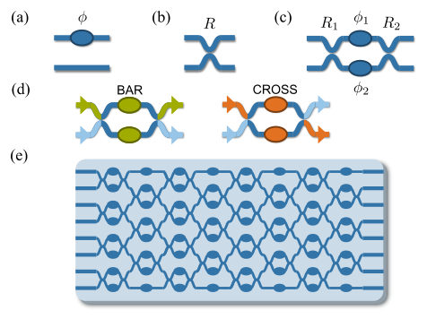
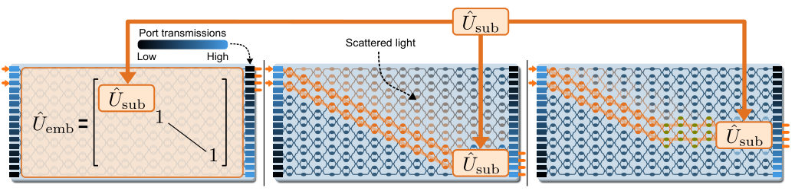
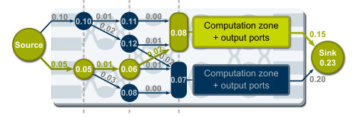
Summary. This paper presents the first automated compiler for subcircuits in Linear Optical Quantum Computing (LOQC) that explicitly models hardware imperfections. By optimizing photon routing and placement within a localized 'computation zone,' the method maximizes the coincidence rate. The results show significant performance gains, demonstrating a path toward more robust and scalable photonic quantum processors.
Why it may be interesting. This work directly tackles the engineering bottleneck of scaling photonic quantum computation by providing a rigorous, optimized compilation framework that accounts for realistic hardware losses, which is crucial for any physical realization of quantum computation.
Main problem. The paper addresses the challenge of compiling quantum subcircuits for Linear Optical Quantum Computing (LOQC) while accurately accounting for hardware imperfections like photon loss and phase noise.
Main result. The proposed compilation method significantly improves the coincidence rate—the probability of successfully measuring all desired photons—by up to 33.2% compared to existing methods.
Method. It introduces a novel compilation strategy that localizes the computation to a 'computation zone' and uses dynamic programming on a layered Directed Acyclic Graph (DAG) to optimize photon routing while balancing input/output port losses against internal beam splitter losses.
Model / system. The system is LOQC implemented using linear optical circuits, which are modeled using interferometers (like Mach-Zehnder Interferometers) and are described by unitary transformations on Fock states.
Key observables. Coincidence Rate (probability of successful photon measurement), Fidelity (Total Variation Distance), and overall circuit robustness against phase noise.
Important parameters / regimes. Beam splitter reflectivities, input/output port transmission rates, and the degree of phase noise (e.g., 15 or 30 mrad).
Assumptions / limitations. The problem is mapped onto a layered DAG structure, allowing for efficient dynamic programming; current evaluations are based on simulations.
Figures summary. Figures illustrate the building blocks of LOQC circuits, the embedding of a subcircuit onto a larger architecture (Bell-Walmsley), and the 'Problem Graph' used for the optimization algorithm.
Paper structure. The paper first establishes the physical problem (LOQC imperfections), then details the limitations of current compilers, proposes the localized subcircuit compilation method using graph theory and dynamic programming, and finally validates the approach by comparing coincidence rates against baseline methods under varying noise conditions.
Linear Optical Quantum Computing (LOQC) is emerging as a promising technology in large-scale quantum computing. Corresponding devices, including linear optical circuits, are rapidly growing in size and fabrication precision. However, even with improved quality, the circuits still exhibit imperfections leading to photon loss or phase noise that vary across the circuit. Already small deficiencies can have a vast impact on both accuracy and efficiency. For computations that do not require the entire linear optical circuit, so-called subcircuits, one can choose where to perform the computation, opening optimization opportunities that are addressed by subcircuit compilation. Current compilers spread the subcircuit's computation across the entire circuit, connecting the same input and output ports, thereby failing to fully exploit the optimization opportunities. However, given the subcircuit's reduced size compared to the entire circuit, one can keep its implementation localized and intentionally route photons to connect good input and output ports. This, however, is a highly non-trivial task, as numerous options must be weighed against one another, and the quality of the solution is influenced by a wide range of hardware parameters. In particular, the reflectivities of imperfect beam splitters can lead to photon losses during routing, which must be traded off against losses at the input and output ports due to imperfect transmission rates. Since current compilers do not account for these effects, we propose the first efficient subcircuit compilation method that optimizes for the coincidence rate, the probability of successfully measuring all desired photons, by handling hardware imperfections. Our evaluations demonstrate significant improvement over existing methods in robustness against phase noise and significantly increased coincidence rates across all benchmarks of up to plus 33.2%.
Authors: Nikolai A. Sinitsyn
Type: theory · Category: disordered systems and neural networks · PDF: https://arxiv.org/pdf/2609.14996v1
Analysis basis: full PDF text, analyzed in chunks
Topic relevance: analog quantum simulation 2/5 · Keldysh / 2PI / non-Gaussian methods 1/5 · non-equilibrium universality 1/5
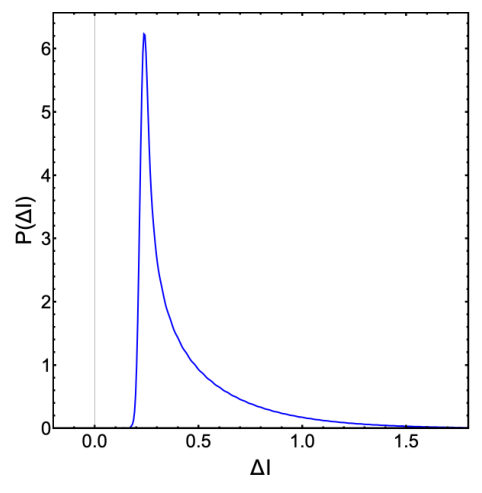
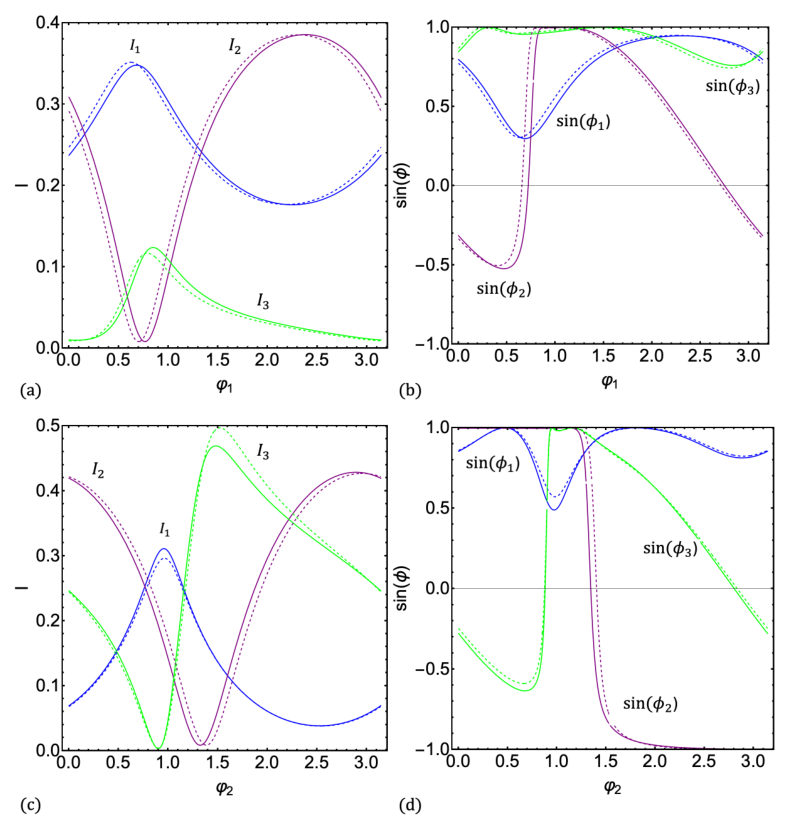
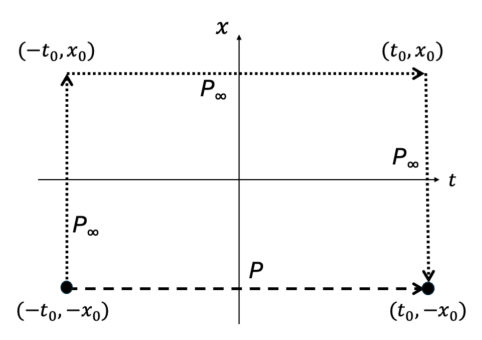
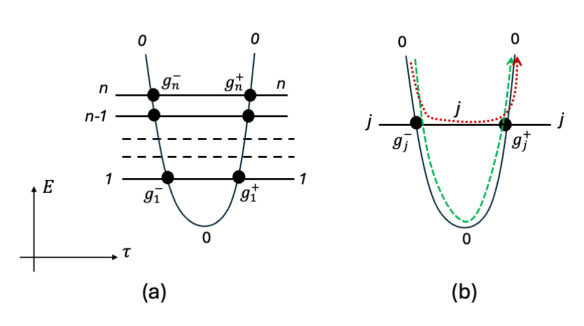
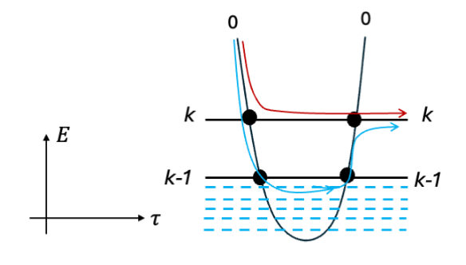
Summary. This theoretical paper derives explicit connection formulas for a system of coupled Painlevé-II equations, modeling phenomena like soliton scattering. Using an advanced WKB approach, the authors determine that the average change in the system's adiabatic invariant is remarkably independent of the system size $n$. This work provides deep insights into the semiclassical quantization of complex, nonlinear quantum systems.
Why it may be interesting. The connection between Painlevé equations, WKB methods, and random matrix theory is highly relevant to understanding quantum chaos and energy level statistics in complex quantum systems.
Main problem. The paper derives explicit connection formulas for the asymptotic solutions of a system of $n>1$ coupled Painlevé-II equations.
Main result. The average change in the net adiabatic invariant, $\langle \Delta I angle_{\Phi}$, is found to be independent of the system size $n$ and is given by a specific logarithmic expression.
Method. The analysis employs an asymptotically exact WKB approach, utilizing the quantum-mechanical independent crossing approximation for a time-dependent Schrödinger equation.
Model / system. The model is a system of $n$ coupled nonlinear differential equations, which are noted to describe soliton scattering in the nonlinear Schrödinger equation and random matrix energy level statistics.
Key observables. Adiabatic invariants ($\Delta I$), final parameters ($\sigma, I_1, \dots, I_n, \phi_1, \dots, \phi_n$), and the probability distribution $P(\Delta I)$.
Important parameters / regimes. System size $n$, initial amplitudes $\alpha_k$, and the coupling parameters $\epsilon_i$.
Assumptions / limitations. The analysis relies on asymptotic expansions and approximations, such as neglecting higher-order corrections ($\sim 1/\sqrt{x}$) for the formal connection formulas.
Figures summary. Figure 1 shows the probability distribution $P(\Delta I)$ for a small invariant $I$, exhibiting a universal shape. Figure 2 compares predictions for $n=3$ connection formulas.
Paper structure. The paper progresses by first establishing the general framework for connection formulas, then deriving the average change in the adiabatic invariant $\langle \Delta I angle_{\Phi}$ for arbitrary $n$, and finally analyzing higher-order phase corrections using path independence arguments.
Connection formulas for the asymptotic solutions of a system of n> 1 coupled Painleve'-II equations with symmetry-breaking parameters are written explicitly. An asymptotically exact WKB approach to these formulas relies on the quantum-mechanical independent crossing approximation for an explicitly time-dependent Schroedinger equation.
Authors: Chihaya Koyama, Shunsuke Kitou, Taishun Manjo, Yuiga Nakamura, Takeshi Hara, Naoyuki Katayama, Takuro Katsufuji, Ryotaro Arita, Yusuke Nomura, Hiroshi Sawa, Taka-hisa Arima
Type: both · Category: strongly correlated electrons · PDF: https://arxiv.org/pdf/2609.15060v1
Analysis basis: full PDF text, analyzed in chunks
Topic relevance: analog quantum simulation 2/5 · quantum measurements 2/5
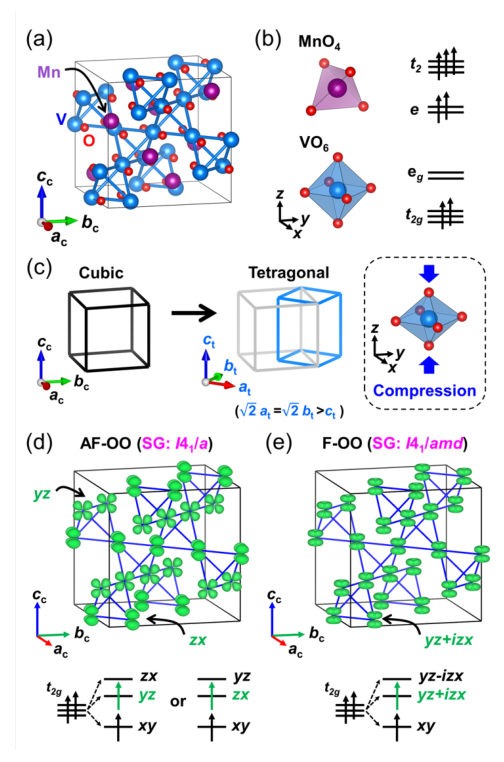
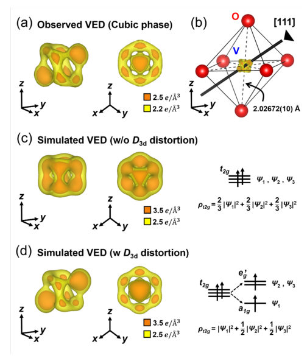
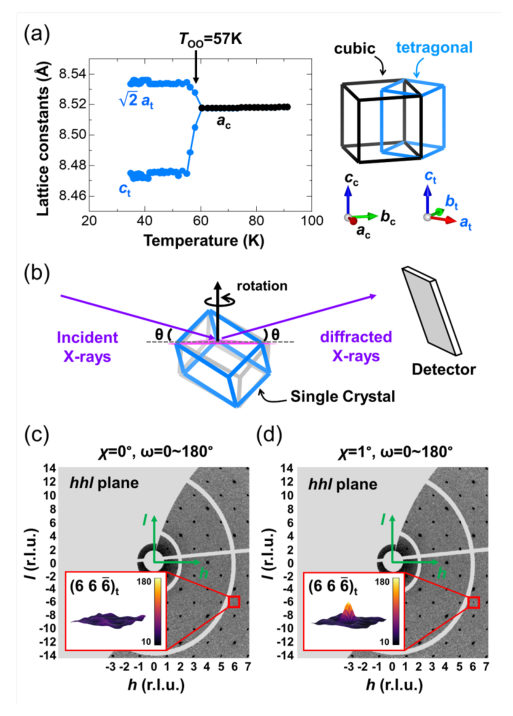
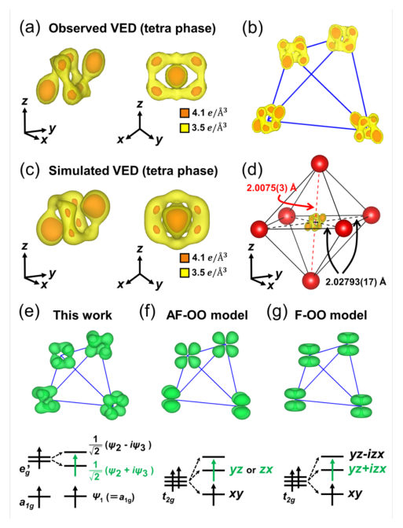
Summary. This research resolves the ambiguity of orbital ordering in MnV2O4 by combining high-precision synchrotron X-ray diffraction with advanced theoretical calculations. By mapping the real-space Valence Electron Density, the authors identify a complex orbital state that is consistent with a noncoplanar ferrimagnetic magnetic structure. This methodology establishes a new standard for characterizing orbital states in frustrated spin-orbital systems.
Why it may be interesting. This work provides a powerful, direct experimental route (VED mapping) to probe subtle orbital degrees of freedom in strongly correlated materials, which is crucial for understanding magnetism and electronic structure in frustrated systems.
Main problem. The paper resolves the long-standing controversy regarding the orbital-ordered ground state in the Mott-insulating vanadium spinel oxide, MnV2O4.
Main result. The orbital ordering is determined to be a complex superposition state, which is confirmed by matching the calculated Valence Electron Density (VED) to high-precision experimental measurements.
Method. The study combines high-precision single-crystal synchrotron X-ray diffraction (XRD) with Core Differential Fourier Synthesis (CDFS) for real-space VED visualization, complemented by DFT+U+SOC calculations.
Model / system. The system is MnV2O4, a geometrically frustrated pyrochlore spinel oxide where V3+ ions ($3d^2$) undergo orbital ordering below a structural transition temperature. The analysis focuses on the $t_{2g}$ subspace of the V $3d$ orbitals.
Key observables. Valence Electron Density (VED) distribution around V sites, crystal symmetry (space group $I4_1/amd$), and quantum fitting parameters ($\gamma, \eta$).
Important parameters / regimes. The structural transition temperature ($ ext{T}_{ ext{OO}}$), the Hubbard U parameter (5 eV), and the derived quantum fitting parameters ($\kappa = 1.21, \gamma = 0.74, \eta = 0.49$).
Assumptions / limitations. The analysis assumes the trigonal distortion is large enough to lift $t_{2g}$ degeneracy, and the interpretation relies on matching calculated VEDs to experimental VEDs.
Figures summary. Figures show the structural transition, the method for distinguishing genuine vs. multiple-scattering XRD reflections, the experimental VED anisotropy, and the comparison of simulated VEDs from different theoretical solutions against the experimental data.
Paper structure. The paper proceeds by first establishing the structural symmetry using XRD, then using CDFS to map the real-space VED. This experimental data is then used to constrain theoretical models (DFT+U+SOC) that calculate the orbital state, ultimately selecting the noncoplanar ferrimagnetic solution that matches the observed VED.
Orbital ordering in vanadium spinel oxides with a geometrically frustrated pyrochlore structure has been a subject of controversy, owing to competing theoretical models and the absence of direct experimental evidence. Here we combine high-precision single-crystal synchrotron x-ray diffraction with core differential fourier synthesis to visualize the valence electron density (VED) of the orbital-ordered ground state in real space. By carefully investigating multiple-scattering artifacts, we identify the low-temperature structure as belonging to the I41/amd space group. The reconstructed VED around the V sites reveals an orbital-ordered state distinct from both previously proposed real- and complex-orbital models. Our results resolve the long-standing controversy in MnV2O4 and establish a route to identifying orbital states in frustrated spin-orbital systems.
Authors: Mao Mishima, Ayaka Sakata, Kazushi Mimura
Type: theory · Category: disordered systems and neural networks · PDF: https://arxiv.org/pdf/2609.13987v1
Analysis basis: full PDF text, analyzed in chunks
Topic relevance: Keldysh / 2PI / non-Gaussian methods 2/5 · methods for driven-dissipative 2/5
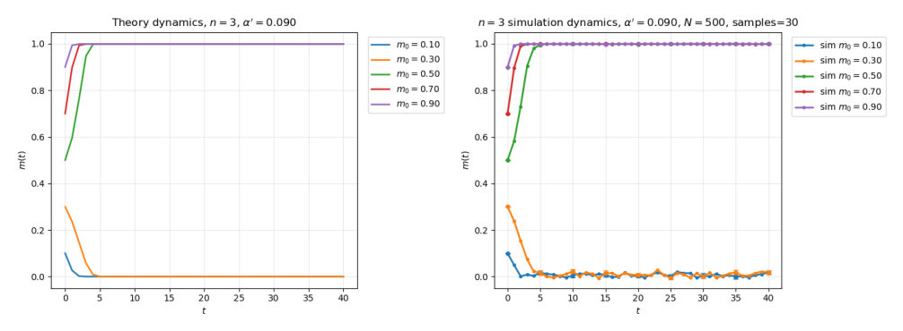
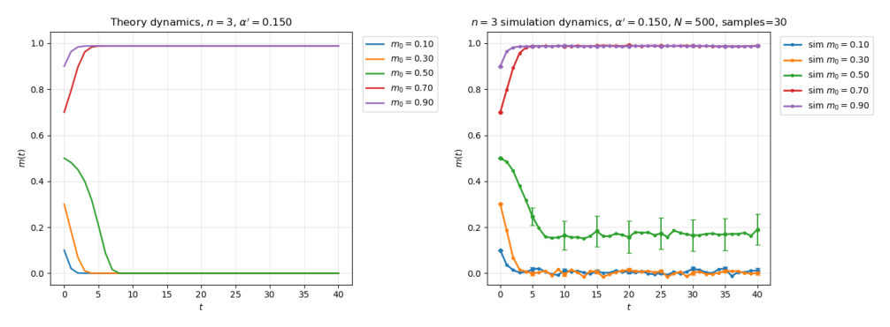
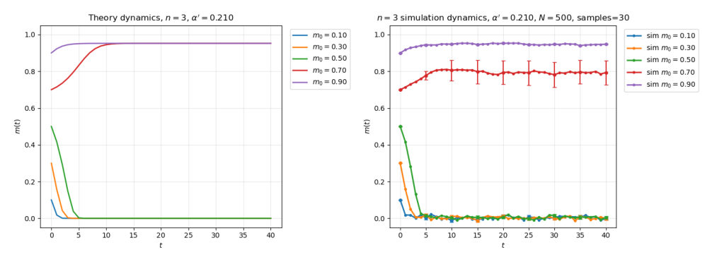
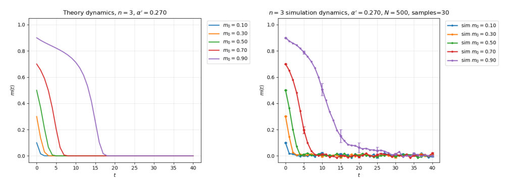
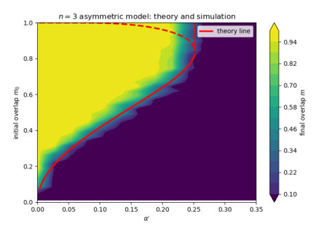
Summary. This paper analyzes a modified, asymmetric Hopfield-type memory model designed to exhibit sequential pattern retrieval. Using advanced techniques like Generating Functional Analysis, the authors derive the dynamics of the system's order parameters. They establish that the memory's capacity scales differently with interaction order compared to standard symmetric models, providing theoretical bounds for pattern storage.
Why it may be interesting. The rigorous theoretical analysis of pattern dynamics in associative memories, especially the derivation of limit-cycle attractors and capacity scaling laws, provides deep insights into non-equilibrium dynamics relevant to complex quantum systems.
Main problem. The study focuses on the retrieval dynamics and storage capacity of an $n$-body asymmetric dense associative memory model, specifically investigating sequential pattern retrieval.
Main result. The asymmetric coupling induces sequential retrieval characterized by a stable limit-cycle attractor, and the normalized storage capacity decreases monotonically with increasing interaction order $n$ for $n \ge 3$.
Method. The analysis employs Generating Functional Analysis (GFA) to derive the dynamical equations, followed by saddle-point approximations to characterize the order parameters in the thermodynamic limit.
Model / system. The model is an $n$-body asymmetric dense associative memory, generalizing the Hopfield model by shifting one pattern index in the higher-order interaction tensor, leading to sequential pattern recall.
Key observables. Overlap parameters ($m(t), q(t,t'), K(t,t')$), the critical retrieval overlap ($m_c$), and the storage capacity ($\alpha'_c$ or $M_{ ext{ret}}^c$).
Important parameters / regimes. Interaction order ($n$), system size ($N$), loading rate ($\alpha$), and the time evolution parameter $t$.
Assumptions / limitations. The analysis relies on the thermodynamic limit ($N o \infty$) and utilizes the saddle-point approximation on the generating functional. It also assumes sequential retrieval occurs.
Figures summary. Figures illustrate sequential retrieval processes at varying loading rates ($\alpha'$) and show the dependence of the retrieval threshold ($\alpha_{c,n}'$) and critical overlap ($m_c$) on the interaction order $n$.
Paper structure. The paper develops the dynamics using GFA, deriving saddle-point equations for order parameters. It analyzes the absence of retarded self-interaction in the asymmetric case and derives asymptotic scaling laws for the critical capacity as $n$ increases.
We study the retrieval dynamics of an $n$-body asymmetric dense associative memory model, in which sequential retrieval is implemented by shifting one pattern index in the higher-order Hebbian interaction. The model exhibits sequential retrieval of the stored patterns, and the retrieval state corresponds to a stable limit-cycle attractor. The storage capacity is defined as the maximum loading rate for which this limit cycle remains stable. Using generating functional analysis, we derive the dynamical equations describing the sequential retrieval state. The generating functional analysis reveals that the retarded self-interaction term vanishes in the asymmetric model, and the resulting overlap dynamics is reproduced by an Amari-Maginu-type signal-to-noise analysis. Also, we find that for the interaction order $n\ge 3$, the normalized storage capacity decreases monotonically with increasing interaction order, in contrast to symmetric Modern Hopfield models.
Authors: Nina Kuklina, Vasilii Vasilenko, Boris Volkov, Alexander Pechen
Type: theory · Category: quantum information and computing · PDF: https://arxiv.org/pdf/2609.14707v1
Analysis basis: full PDF text, analyzed in chunks
Topic relevance: methods for driven-dissipative 2/5 · quantum measurements 2/5
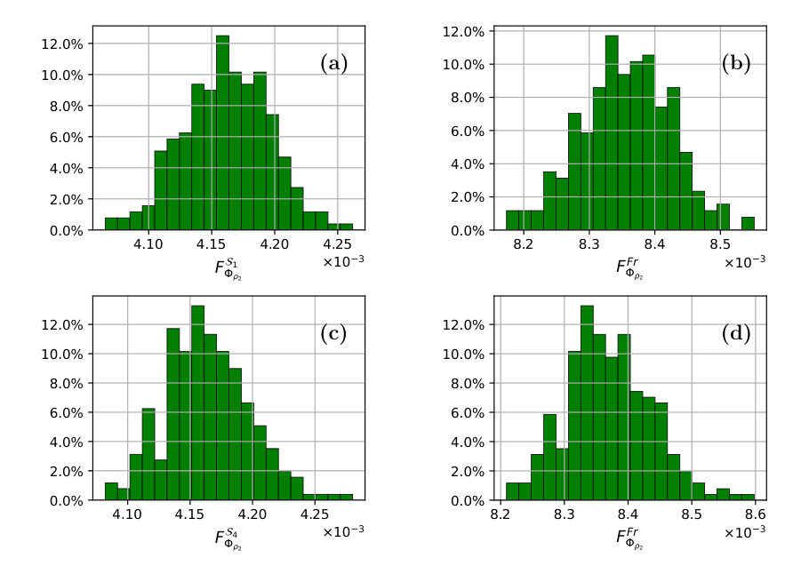
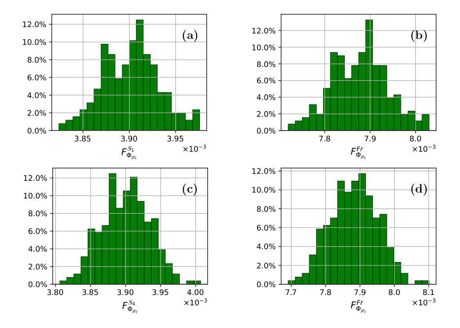
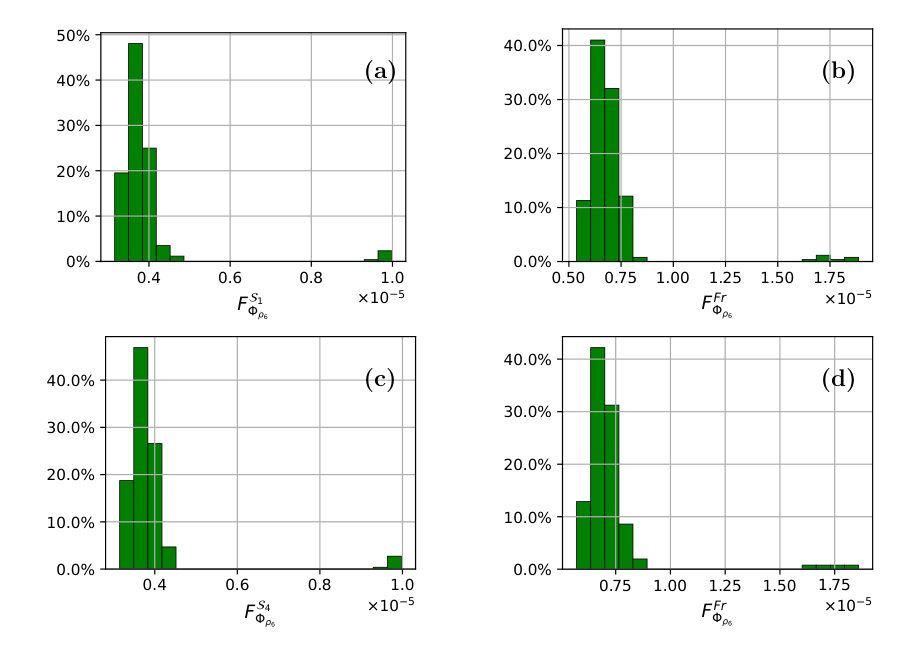
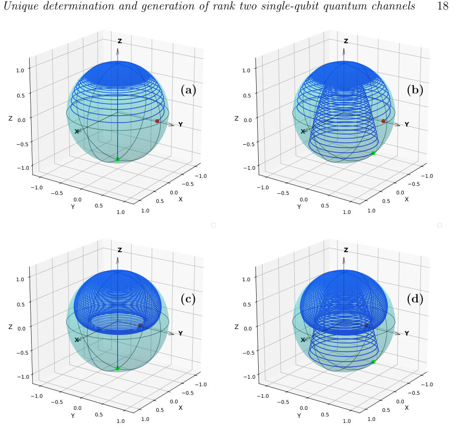
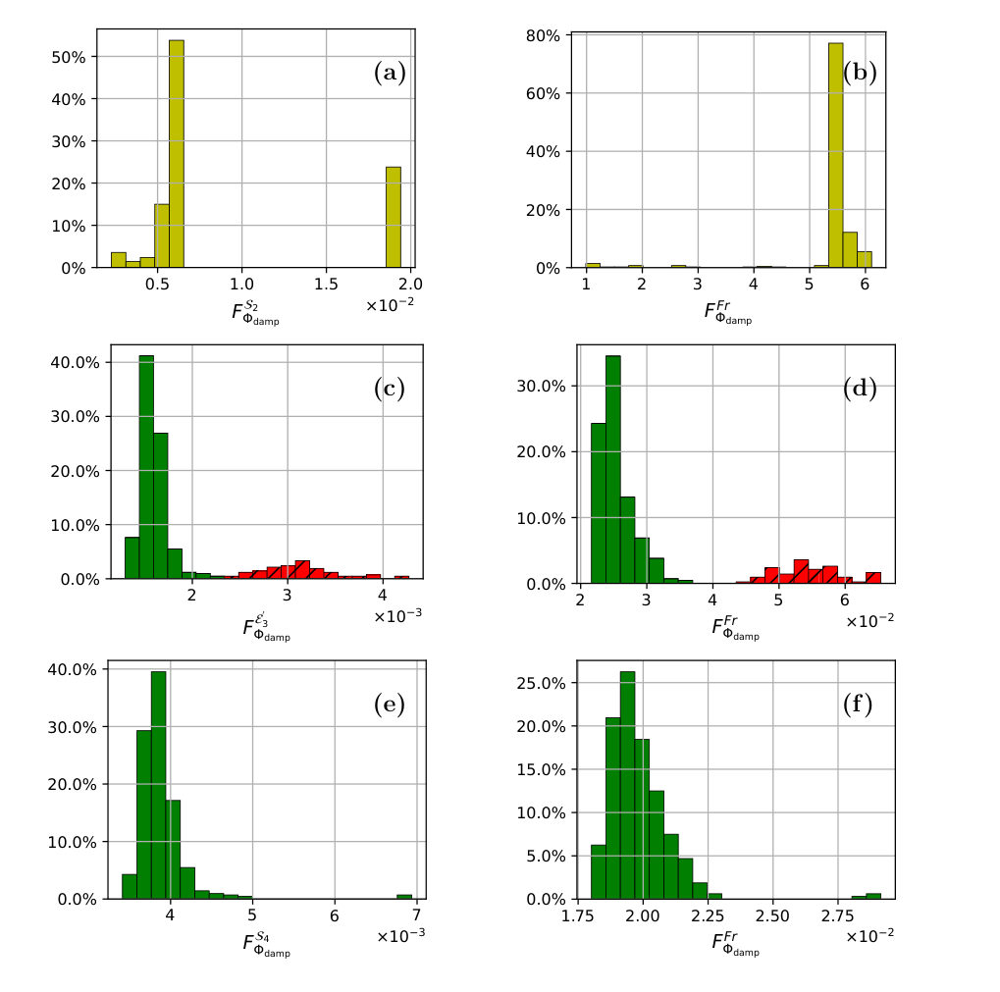
Summary. This paper theoretically establishes the minimal set of input states needed to uniquely identify a quantum channel, focusing on the challenging case of non-unitary, rank two single-qubit channels. The authors prove that only three carefully selected density matrices are sufficient for this unique determination. This result has direct implications for quantum process characterization and the design of quantum control protocols.
Why it may be interesting. This work provides a fundamental theoretical result on the distinguishability of quantum channels, which is crucial for quantum process tomography and quantum control theory in open systems.
Main problem. The core problem is determining the minimal number of input quantum states required to uniquely determine an unknown, non-unitary quantum channel acting on an open system.
Main result. The authors prove that for rank two single-qubit quantum channels, it is sufficient to consider the channel's action on only three suitably chosen density matrices.
Method. The work uses theoretical analysis involving the Choi matrix representation and the study of affine subspaces defined by the action of the channel on a set of input states.
Model / system. The system involves open quantum systems modeled by single-qubit quantum channels ($ ext{Chan}(2, 2)$), which are represented by CPTP maps. The analysis focuses specifically on channels of rank two.
Key observables. The primary observables are the quantum channels themselves, characterized by their action on specific density matrices, and the resulting minimal required number of states ($k$).
Important parameters / regimes. The rank of the channel ($ ext{rank } \Phi$) and the number of input states ($k$) are key parameters. The analysis is restricted to single-qubit systems.
Assumptions / limitations. The primary assumption is the ability to characterize the channel uniquely by its action on a finite set of states, which is proven to be true for the specific class of rank two channels.
Figures summary. The notes mention figures showing histograms of objective functional values for generating the phase damping channel using coherent and incoherent controls, and control patterns themselves.
Paper structure. The paper progresses from establishing general bounds on the number of required states (requiring $n^2$ states generally) to proving the specific, minimal result of $k=3$ for rank two single-qubit channels, followed by numerical investigation of channel generation.
An important problem in quantum technologies is the generation of a target evolution of an open quantum system. A core component of this task is the ability to determine whether the actual evolution of the system coincides with the target evolution. For the generation of unitary quantum channels in open quantum systems, it was shown by Goerz, Reich and Koch [New J. Phys. {\bf 16} 055012 (2014)] that for determining whether the actual evolution coincides with a desired unitary it is sufficient to compare their action on three special density matrices. In this work, we consider controlled generation and unique determination of non-unitary quantum channels in open quantum systems with particular emphasis on rank two single-qubit quantum channels. We prove that to uniquely determine such quantum channels it is sufficient to consider their action on only three suitably chosen density matrices. Based on this theoretical result, we numerically investigate generation of various non-unitary target single-qubit quantum channels in open quantum systems using coherent and incoherent controls.
Authors: Aleksei M. Cherkasov, Kirill M. Gerke, Aleksey Khlyupin
Type: theory · Category: statistical mechanics · PDF: https://arxiv.org/pdf/2609.14586v1
Analysis basis: full PDF text, analyzed in chunks
Topic relevance: Keldysh / 2PI / non-Gaussian methods 2/5 · analog quantum simulation 1/5
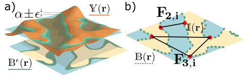
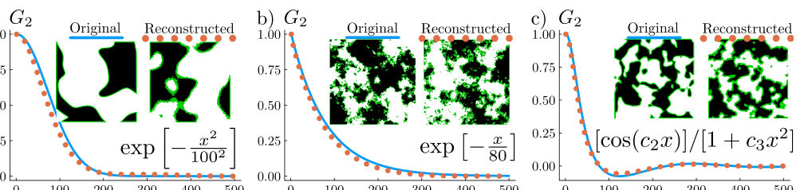
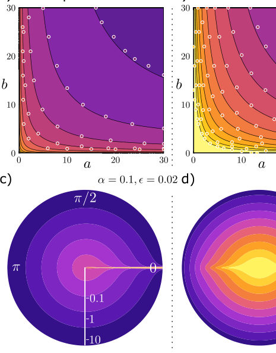
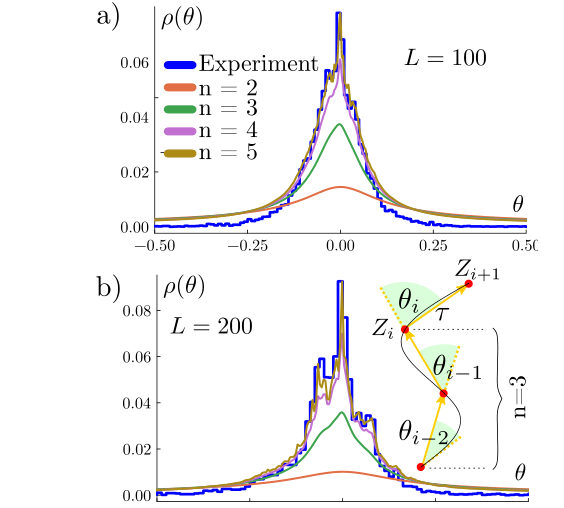
Summary. This paper introduces an exact mathematical framework to calculate higher-order correlation functions for interfaces derived from Gaussian random fields. By linking bulk field statistics to the geometry of the interfaces, the authors enable the reconstruction of complex, disordered media like Gaussian foams. This work provides powerful tools for characterizing directional memory and connectivity in random physical systems.
Why it may be interesting. While focused on classical statistical mechanics, the rigorous mathematical framework for calculating higher-order correlations and reconstructing underlying fields from boundary data is highly relevant to understanding entanglement structure or boundary conditions in quantum many-body systems.
Main problem. Developing an exact analytical framework to calculate higher-order (n-point) correlation functions for interfaces defined by Gaussian level sets.
Main result. The framework establishes explicit, exact analytical links between bulk field statistics, binary field correlations, and the geometry of the interfaces, allowing for the reconstruction of disordered media.
Method. Derivation of $n$-point correlation functions ($F_{n,i}$) using spectral representations and establishing recursive relationships between different correlation types ($G_2, S_2, F_{2,i}$).
Model / system. The study focuses on Gaussian Random Fields (GRFs) $Y(\mathbf{r})$ and their resulting interfaces, which can model complex structures like Gaussian foams or porous media.
Key observables. Interface correlation functions ($F_{n,i}$), bulk field autocorrelation ($G_2$), and binary field autocorrelation ($S_2$).
Important parameters / regimes. The level set threshold ($\alpha$) and the regularization parameter ($\epsilon$) are key parameters defining the interface.
Assumptions / limitations. The primary assumption is that the underlying field is Gaussian, allowing for the derivation of exact analytical forms for the correlation functions.
Figures summary. Figures illustrate the relationship between the continuous field, the thresholded binary field, and the derived correlation functions, comparing analytical predictions with numerical reconstructions for various field types.
Paper structure. The paper progresses by defining the interface via level sets, deriving the two-point correlation function ($F_{2,i}$) and linking it to bulk statistics, and then extending this methodology to higher-order ($F_{3,i}$ and beyond) correlations to study directional memory effects.
We derive exact analytical expressions for higher-order correlations of Gaussian level-set interfaces, establishing a direct link between bulk field statistics and interface geometry. This framework enables efficient reconstruction of disordered media, detailed modeling of {Gaussian foams}---structured, double-thresholded interfaces with tunable morphology---and analysis of {memory-enhanced anisotropy} reflecting directional persistence in surface structure. These results open new possibilities for characterizing complex transport, guiding stochastic reconstructions, designing materials with desired properties, quantifying the information content of correlation functions and modelling directional processes on irregular boundaries.
Authors: Xin Feng, Peijun Li, Wei Wu
Type: both · Category: disordered systems and neural networks · PDF: https://arxiv.org/pdf/2609.14410v1
Analysis basis: full PDF text, analyzed in chunks
Topic relevance: analog quantum simulation 2/5 · Frenkel-Kontorova 1/5
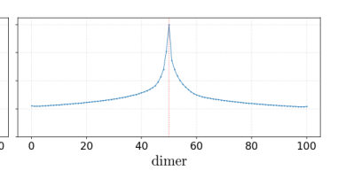
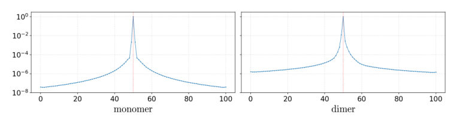
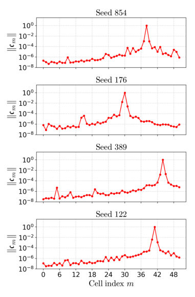
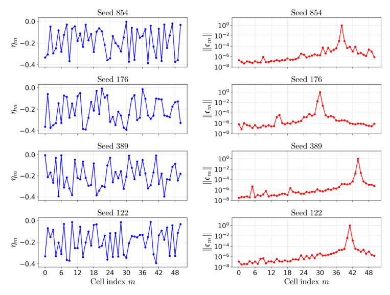
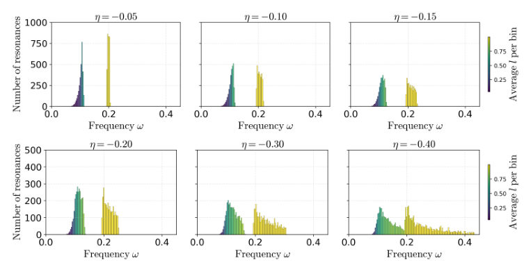
Summary. This work provides a rigorous mathematical and numerical study of Anderson localization for elastic waves in periodic metamaterials with random defects. By combining layer potential theory, the Floquet transform, and asymptotic analysis, the authors establish the conditions for spectral gaps and confirm the transition to localized wave states as disorder increases. This work is significant for understanding wave transport in engineered, disordered elastic structures.
Why it may be interesting. The mathematical framework developed for analyzing wave localization in disordered elastic media provides strong analogies to localization phenomena in quantum systems, such as Anderson localization in disordered quantum lattices, making it relevant for condensed matter theorists.
Main problem. The paper investigates the phenomenon of Anderson localization in elastic wave propagation within subwavelength periodic structures when subjected to random material perturbations.
Main result. The analysis theoretically proves the existence of band gaps and numerically demonstrates the emergence of strong Anderson localization in both monomer and dimer elastic systems as the random perturbation strength increases.
Method. The study employs advanced mathematical techniques including layer potential methods, the Floquet transform, and asymptotic analysis to solve the resulting boundary integral equations.
Model / system. The model consists of elastic waves propagating in a 3D medium containing periodically arranged elastic scatterers (monomers or dimers). Perturbations are introduced by varying the material properties ($\epsilon_{m,i}$) of these scatterers from cell to cell.
Key observables. Subwavelength resonant frequencies, the existence of spectral gaps, and the localization intensity $l(\mathbf{u})$ of the eigenmodes.
Important parameters / regimes. Perturbation strength ($\eta$), the quasi-momentum vector ($\alpha$), and the material parameters ($\lambda, \mu, ho$).
Assumptions / limitations. The analysis relies on asymptotic expansions in the frequency ($\omega$) and the perturbation strength ($\delta$), and assumes the invertibility of certain single-layer potentials.
Figures summary. Figures illustrate the observation of localized modes in monomer and dimer systems, showing how the spectral gap fills and the average localization intensity increases as the random perturbation strength is increased.
Paper structure. The paper progresses by first analyzing the unperturbed system using layer potentials to establish band gaps. It then applies the Floquet transform to the perturbed system, deriving infinite coupled equations whose solvability determines the resonant frequencies, culminating in numerical confirmation of Anderson localization.
This paper investigates Anderson localization in subwavelength elastic periodic systems with random perturbations. For the unperturbed system, we use layer potential techniques to reformulate the eigenvalue problem as boundary integral equations, derive asymptotic formulas for the subwavelength eigenvalues, and prove the existence of a band gap above the subwavelength band. For perturbed systems, we apply the Floquet transform to obtain a periodic formulation and derive equations determining the resonant frequencies under general perturbations. Numerical experiments for perturbed periodic monomers and dimers agree with the theoretical predictions. We further demonstrate Anderson localization by increasing the strength and number of random perturbations. These results provide a mathematical foundation for understanding subwavelength localization in elastic metamaterials.
Authors: Daiki Suruga
Type: theory · Category: quantum information and computing · PDF: https://arxiv.org/pdf/2609.14658v1
Analysis basis: full PDF text, analyzed in chunks
Topic relevance: quantum measurements 2/5 · analog quantum simulation 1/5
Summary. This paper provides exact characterizations for the asymptotic communication rates in quantum Simultaneous-Message-Passing (SMP) and one-way communication models. It proves that the rate is governed by the structure of the function, $D^\parallel(f)$, and establishes an exponential strong converse for this rate. The work quantifies how shared quantum resources like entanglement affect these fundamental communication limits.
Why it may be interesting. While focused on communication complexity, the rigorous analysis of quantum information bounds, entropy, and the use of quantum measurements (like PGM) are fundamental theoretical tools applicable to understanding resource limitations in quantum many-body simulations or quantum networking protocols.
Main problem. The paper determines the exact asymptotic communication rate required to compute joint functions in the quantum Simultaneous-Message-Passing (SMP) model and establishes the corresponding exponential strong converse.
Main result. The optimal worst-case asymptotic rate is characterized by $D^\parallel(f) = \log|\mathrm{Row}(f)| + \log|\mathrm{Col}(f)|$, and the strong converse shows that rates below this threshold lead to exponentially decaying success probabilities.
Method. The proof relates the SMP problem to one-way communication and utilizes techniques involving quantum min-entropy and the pretty-good measurement to establish bounds on the success probability.
Model / system. The analysis focuses on quantum communication complexity protocols, specifically the SMP model and one-way communication, considering the effects of shared randomness and entanglement.
Key observables. Optimal asymptotic communication rate, success probability decay rate ($2^{-\Omega(n)}$), and the quantities $D^\parallel(f)$ and $\log|\mathrm{Row}(f)|$.
Important parameters / regimes. Error $\epsilon$, number of instances $n$, and the structure of the function $f$ (via its row/column sets).
Assumptions / limitations. The results hold for total functions $f$ satisfying certain structural conditions (C.I) and (C.II).
Paper structure. The paper establishes the strong converse first, then derives the exact rates for worst-case and expected communication, quantifying the impact of shared entanglement and randomness.
Computing many instances jointly can reduce communication per instance. We ask whether such savings occur in the simultaneous-message-passing (SMP) model and how they depend on quantum messages and shared resources. For every finite total function $f$ and fixed error $0\le\varepsilon<1$, we prove that the optimal worst-case communication per instance for $f^n$ converges to \[ D^\parallel(f)=\log|\mathrm{Row}(f)|+\log|\mathrm{Col}(f)|, \] where $\mathrm{Row}(f)$ and $\mathrm{Col}(f)$ are the sets of distinct rows and columns of the table $(f(x,y))_{x,y}$. This holds for classical and quantum SMP without shared entanglement, with or without shared randomness. Thus, transmitting row and column indices is asymptotically optimal, even with bounded error, joint computation, and quantum messages. In particular, the exponential advantage of quantum fingerprinting for a single instance of equality without shared randomness disappears in the asymptotic rate. We also prove that the same threshold governs an exponential strong converse: every fixed worst-case communication rate below it forces the probability of computing all $n$ outputs correctly to decay as $2^{-Ω(n)}$, even on average under a fixed product input distribution. With shared randomness, the optimal expected communication rate is $(1-\varepsilon)D^\parallel(f)$. Entanglement shared between each sender and the referee halves both rates; arbitrary tripartite entanglement gives no further reduction. The results extend to a class of total relations and yield one-way characterizations with $D^\parallel(f)$ replaced by $\log|\mathrm{Row}(f)|$. Our proof reduces SMP to one-way communication and relates successful computation to sampling based on quantum min-entropy; we also give a simpler proof of the key lemma using the pretty-good measurement.
Authors: Alessio Zaccone
Type: both · Category: other · PDF: https://arxiv.org/pdf/2609.14468v1
Analysis basis: full PDF text, analyzed in chunks
Topic relevance: Keldysh / 2PI / non-Gaussian methods 2/5 · interference shaping light 1/5
Summary. This paper develops a theory showing that giant second-harmonic generation in ultrathin metals is not due to large changes in the density of states, but rather the resonant amplification of small phase-space redistributions. By modeling the system near a critical confinement thickness, the theory successfully predicts the magnitude and smooth thickness dependence observed in experimental measurements on Ag(111).
Why it may be interesting. This work bridges quantum confinement effects (typically studied via QWS) with nonlinear optics, showing that resonant enhancement mechanisms can amplify subtle electronic structure changes into macroscopic, measurable optical effects.
Main problem. To understand how quantum confinement in ultrathin metallic films modifies the nonlinear optical response, specifically the Second-Harmonic Generation ($\chi^{(2)}$).
Main result. Giant $\chi^{(2)}$ enhancement, up to $\sim 100$-fold, is predicted when the film thickness approaches a critical confinement crossover thickness ($L_c$) due to resonant amplification, even though the bare density-of-states enhancement is small.
Method. The theory uses a phase-space description of confinement and models $\chi^{(2)}$ using a minimal double-resonance closure to predict resonant amplification.
Model / system. The system is few-atomic layer metals (e.g., Ag(111)) confined in one dimension, modeled using a phase-space approach that accounts for the suppression of long-wavelength electronic states.
Key observables. Second-harmonic generation susceptibility ($\chi^{(2)}$), thickness-normalized SHG efficiency, and the Fermi-level DOS enhancement.
Important parameters / regimes. Confinement crossover thickness ($L_c$), effective phase-space carrier density ($n_{ ext{eff}} \simeq 3.6 imes 10^{20} ext{ cm}^{-3}$ for Ag), and the dephasing linewidth ($\Gamma$).
Assumptions / limitations. The giant enhancement relies on the assumption that the optical pathway detuning ($\Delta_{opt}$) falls within the resonance linewidth ($\Gamma$) near the crossover thickness $L_c$.
Figures summary. Figure 1 schematically illustrates the thickness-normalized SHG efficiency increase, detailing how confinement shifts $L_c$ and how the minimal resonance closure mechanism drives the enhancement.
Paper structure. The paper establishes the problem by noting the small bare DOS change, then proposes the resonant amplification mechanism via a minimal double-resonance closure, and finally applies this theory to reproduce the magnitude and non-oscillatory thickness dependence observed in Ag(111) experiments.
Quantum confinement restructures the electronic phase space of ultrathin metals, but the resulting density-of-states (DOS) change is not generically large. We show that, within a three-dimensional confinement theory based on the suppression of long-wavelength electronic states, the Fermi-level DOS enhancement on the weak-confinement branch is bounded by $(4/3)^{1/3}-1\simeq10.1\%$. Instead, confinement-induced redistribution of electronic phase space can be strongly amplified by resonant denominators in the second-order susceptibility. A minimal double-resonance closure predicts giant amplification when the film thickness approaches $L_c=(2π/n)^{1/3}$, where $n$ is the carrier density, and a dominant optical pathway lies within a dephasing linewidth of resonance. Applied to recent Ag(111) measurements, the theory gives an effective phase-space carrier density parameter $n_{\rm eff}\simeq3.6\times10^{20}\,\mathrm{cm}^{-3}$, a tenfold enhancement of $|χ^{(2)}|$, and hence the observed $\sim100$-fold increase of thickness-normalized second-harmonic-generation efficiency, together with the observed non-oscillatory thickness dependence.
Authors: Stefano Scali, Vicente P. Soloviev, Antonio Márquez Romero, Brian Coyle, Giuseppe Buonaiuto, Annie Paine, Jonathan H. Fetherolf, Marcos Diez García, Michal Krompiec, Josh Kirsopp
Type: theory · Category: quantum information and computing · PDF: https://arxiv.org/pdf/2609.15697v1
Analysis basis: full PDF text, analyzed in chunks
Topic relevance: analog quantum simulation 2/5 · quantum measurements 1/5
Summary. This paper introduces OpenQARP, a novel, modular, open-source Python framework built on a C++ core for quantum application research. It streamlines the entire quantum workflow by separating circuit definition, measurement, and execution into interchangeable layers. The framework claims significant performance gains and enforces rigorous numerical consistency across diverse quantum computing tasks.
Why it may be interesting. For AMO physicists, this framework provides a standardized, high-performance platform to implement and benchmark quantum algorithms for molecular Hamiltonians (like VQE or QPE) without getting bogged down in the plumbing of disparate SDKs.
Main problem. The quantum application research workflow is complex, requiring reliable integration of circuit definition, measurement, simulation, and compilation across multiple, often incompatible, software tools.
Main result. OpenQARP is presented as a modular, high-performance framework that significantly speeds up operator algebra and simulation compared to existing tools while enforcing strict numerical conventions.
Method. The framework uses a modular design separating concerns into Blocks (circuits), Primitives (measurements/extractions), and Engines (execution/compilation), built on a fast C++ core.
Model / system. It targets general quantum computation, applicable to problems ranging from electronic structure calculations to combinatorial optimization, supporting both near-term and fault-tolerant methods.
Key observables. Performance metrics (speedup factors of 1-2 orders of magnitude), resource estimation (qubit count, gate set), and numerical correctness checks via independent oracles.
Important parameters / regimes. Device constraints (gate set, connectivity, noise model), computational regimes (ideal vs. sampled), and circuit parameters (angles in radians).
Assumptions / limitations. The framework assumes that separating concerns into Blocks, Primitives, and Engines is the key to flexibility, and that strict adherence to shared conventions (e.g., qubit indexing) prevents subtle errors.
Figures summary. Figures illustrate the three-layer architecture (Block $ ightarrow$ Circuit; Primitive $ ightarrow$ Quantity; Engine $ ightarrow$ Run) and demonstrate the robustness of the separation by showing how changing one component fails gracefully.
Paper structure. The paper introduces the OpenQARP architecture, details the modular separation of concerns (Blocks, Primitives, Engines), benchmarks its performance against competitors across various workloads (operator algebra, simulation), and discusses its extensibility and conventions.
We introduce OpenQARP, the Open Quantum Application Research Package: an open-source Python framework for quantum application research, built on a compiled C++ core. In OpenQARP, an application is assembled from an algorithm library that orchestrates three interchangeable layers: blocks describe circuits, primitives describe what to extract from them, and engines describe how they run. The release spans near-term through fault-tolerant methods, targeting problems from electronic structure to combinatorial optimization, with device-aware compilation, circuit cutting, and resource estimation over a single set of numerical conventions that the code must follow. Every numerical feature is checked against an independent oracle, and every published timing carries a correctness check. Against OpenFermion, Qiskit/Aer, PennyLane/Lightning, Qulacs, qsim, and pytket, OpenQARP is one to two orders of magnitude faster on operator algebra and among the fastest on simulation. It matches mature compilers on two-qubit gate count, and expresses a complete algorithm in the lines a framework needs rather than the plumbing a primitive stack demands.
Authors: Ömer Önder, Aydın Cem Keser
Type: theory · Category: disordered systems and neural networks · PDF: https://arxiv.org/pdf/2609.14550v1
Analysis basis: full PDF text, analyzed in chunks
Topic relevance: analog quantum simulation 2/5 · methods for driven-dissipative 1/5
Summary. This paper analyzes how selective oscillator dynamics explores the complex energy landscape of spin-glass models. It identifies that the dynamics excels at global, collective exploration, leaving behind only weak, local defects. By combining this analog search with a local refinement step, the protocol achieves competitive performance on hard optimization problems like Max-Cut.
Why it may be interesting. The concept of using analog dynamics (oscillators) for collective exploration, followed by targeted digital refinement, provides a blueprint for hybrid quantum/classical optimization algorithms relevant to quantum computation.
Main problem. The study characterizes the statistical structure of ensembles generated by Oscillator Ising Machines (OIMs) when exploring complex, frustrated energy landscapes, moving beyond simple energy minimization.
Main result. The selective oscillator dynamics performs the dominant collective exploration, while residual errors manifest as sparse weak-local-field defects, which can be corrected by local Metropolis refinement.
Method. The authors employ a selective multi-epoch annealing protocol (OIM+) on the Sherrington-Kirkpatrick spin-glass model, followed by a local Metropolis-Hastings refinement.
Model / system. The system uses Oscillator Ising Machines (OIMs) coupled to the Sherrington-Kirkpatrick (SK) spin-glass model, which models frustrated optimization problems like Max-Cut.
Key observables. Overlap distributions, Hamming distances, hierarchical clustering, local-field statistics, and the final cut value on G-set benchmarks.
Important parameters / regimes. The annealing schedule involves multiple epochs with time-dependent noise and selection criteria; the comparison is made against pure Metropolis annealing.
Assumptions / limitations. The analysis suggests a natural division of labor between the collective analog search (OIM+) and targeted local refinement (MH).
Figures summary. Figures detail the selective multi-epoch annealing schedule for OIM+, showing the progression of annealing parameters over time.
Paper structure. The paper first introduces the OIM+ protocol for exploring the SK model's statistical structure, identifies the weak-field defect mechanism, and then validates the complete hybrid protocol (OIM+ + MH) on standard G-set Max-Cut benchmarks.
Oscillator Ising machines (OIMs) provide an analog dynamical approach to combinatorial optimization, but comparatively little is known about the statistical structure of the ensembles they generate. Using the Sherrington-Kirkpatrick (SK) spin-glass model, we introduce a selective oscillator scheme, OIM+, in which successive annealing epochs are combined with energy-based elimination and repopulation of replicas. We characterize the resulting states through overlap distributions, Hamming distances, hierarchical clustering, and local-field statistics. OIM+ explores structured low-energy regions while retaining a nontrivial ensemble of configurations despite repeated selection. We identify sparse weak-local-field residual defects as a characteristic limitation of the dynamics. A short Metropolis-Hastings refinement preferentially corrects these defects, indicating that the oscillator dynamics performs the dominant collective exploration while the remaining corrections are predominantly local. The weak fields arise mainly from cancellation among competing interaction terms rather than uniformly weak couplings. The same behavior persists for an antiferromagnetically biased SK ensemble, where the hybrid method reaches a pooled mean energy comparable to a substantially longer pure Metropolis anneal. The complete protocol also achieves competitive performance on standard G-set Max-Cut benchmarks. These results suggest a natural division of labor between collective analog search and targeted local refinement.
Authors: Raquel Sánchez-Barquilla, Rafael Pineda Medina, Pablo García Talavera, Adrian Valadkhani, Edwin Herrera, Brinda Kuthanazhi, Lin-Lin Wang, Sergey L. Bud'ko, Paul C. Canfield, Roser Valentí, Isabel Guillamón, William J. Herrera, Alfredo Levy Yeyati, Hermann Suderow
Type: both · Category: disordered systems and neural networks · PDF: https://arxiv.org/pdf/2609.13398v1
Analysis basis: full PDF text, analyzed in chunks
Topic relevance: quantum measurements 2/5 · interference shaping light 1/5
Summary. This work uses STM to map the electronic scattering phase in the magnetic semiconductor $ ext{EuCd}_2 ext{As}_2$. By identifying phase dislocations around impurities, the researchers provide direct evidence of spin-orbit coupling effects in real space. This technique offers a novel way to study how local disorder shapes the electronic structure in quantum materials.
Why it may be interesting. The ability to map the phase of electronic scattering in real space provides a powerful, direct diagnostic tool for studying spin-orbit coupling effects in disordered quantum materials, bridging concepts from topological physics and local disorder physics.
Main problem. The study aims to understand how structural disorder modifies electronic states in magnetic semiconductors by visualizing the scattering phase in real space.
Main result. The research successfully visualizes phase dislocations, characterized by $2\pi$ phase windings around impurity sites, which are signatures of spin-orbit coupling interference.
Method. Scanning Tunneling Microscopy (STM) is used to measure the local density of states (LDOS), from which the spatial phase of the electronic scattering is extracted via Fourier filtering.
Model / system. The physical system is the magnetic semiconductor $ ext{EuCd}_2 ext{As}_2$, which exhibits disorder due to $ ext{Eu}$ interstitials. The analysis models the LDOS modulation to isolate and map the phase $\phi(\mathbf{r})$.
Key observables. Phase dislocations (phase slips), spatial phase maps $\phi(\mathbf{r}, V)$, and the decay length of the phase gradient.
Important parameters / regimes. Bias voltage ($V$), magnetic field (0 T vs 14 T), and the relative strength of spin-orbit coupling ($ ext{t}_{ ext{SO}}$) versus scalar scattering ($ ext{t}_0$).
Assumptions / limitations. The LDOS can be modeled as an amplitude- and phase-modulated cosine, and the analysis relies on isolating a single scattering wavevector $\mathbf{q}_0$.
Figures summary. Figures show STM topography revealing charge puddles, and corresponding phase maps ($\phi(\mathbf{r}, V)$) clearly displaying phase slips concentrated near impurity sites.
Paper structure. The paper progresses from establishing the necessity of phase mapping to observing phase slips near impurities, developing a model linking phase winding to SOC, and finally quantifying the SOC influence via the decay length of the phase gradient.
Understanding how disorder modifies electronic states in magnetic semiconductors is important for controlling spin-dependent transport and topological responses. Here we use scanning tunneling microscopy to visualize scattering phase textures in EuCd2As2. By isolating a single surface wavevector we reconstruct spatial phase maps of the local density of states and identify phase dislocations characterized by 2pi winding around impurity sites. These phase singularities emerge systematically within charge puddles generated by Eu interstitials and their positions evolve with bias voltage. We show that their spatial structure is consistent with interference between multiple scattering channels, including contributions from spin-orbit coupling. We provide a model which reproduces phase dislocations and relates the decay of the phase gradient to the relative strength of spin-orbit and scalar scattering. Our results establish a route to access the phase of electronic scattering in real space and study the role of local disorder and spin-orbit interactions in shaping electronic states in quantum materials.
Authors: Siran Zhang, Shuming Cheng, Xiang Li, Jinyi Liu
Type: theory · Category: quantum information and computing · PDF: https://arxiv.org/pdf/2609.15139v1
Analysis basis: full PDF text, analyzed in chunks
Topic relevance: quantum measurements 2/5
Summary. This paper introduces a novel 'train--prune--readout--rewrite' workflow to make quantum machine learning models interpretable. By combining complex-valued neural networks with symbolic regression, the authors test if the learned representations genuinely encode underlying physical laws, rather than just fitting data points. This establishes a rigorous framework for validating the physical content of deep quantum models.
Why it may be interesting. It provides a rigorous, mathematically structured methodology for interpreting complex quantum machine learning models, which is crucial for building trustworthy AI tools for quantum physics.
Main problem. To develop an interpretable framework for quantum learning that moves beyond mere predictive accuracy by extracting underlying mathematical structure and physically testable representations from learned models.
Main result. The proposed 'train--prune--readout--rewrite' workflow successfully distinguishes between mere computational agreement and the recovery of true physical relations, showing fidelity in rewriting structures like purity.
Method. The authors employ a complex-valued Kolmogorov–Arnold network (CVKAN) trained on quantum state data, followed by a four-step process: pruning, analytic readout, symbolic regression rewriting, and transformation-based testing.
Model / system. The system involves quantum states represented by density matrices $\rho \in \mathbb{C}^{d \times d}$ for $n$ qubits. The model is a CVKAN whose edge functions are parameterized by Gaussian-RBF expansions.
Key observables. Purity ($P(\rho)$), von Neumann entropy ($S(\rho)$), CHSH test values, and general Pauli-correlation information.
Important parameters / regimes. The number of qubits ($n$), the size of the network (number of layers/nodes), and the RBF parameters (e.g., $\rho_{RBF}$).
Assumptions / limitations. The framework assumes that physical structure can be recovered by separating the learning process into distinct, verifiable stages (pruning, readout, rewriting).
Figures summary. Figures illustrate the four levels of the interpretability workflow and show analytic readouts on the single-qubit physical state manifold, comparing analytical targets against extracted RBF-only readouts.
Paper structure. The paper details the CVKAN architecture and the multi-task learning setup, then systematically introduces the four-stage workflow (train, prune, readout, rewrite) by testing it on single-qubit and two-qubit observables, culminating in a discussion of the framework's general applicability.
AI for Science aims not only to predict complex physical systems from data, but also to extract mathematical structure and physically testable representations from learned models. Here, a train--prune--readout--rewrite workflow is developed that separates physical-domain grounding from three increasingly stringent analysis claims: algebraically equivalent readout of a trained predictor, compact teacher-faithful symbolic rewriting on the sampled physical domain, and transformation-based tests of learned internal representations. The workflow is implemented with complex-valued Kolmogorov--Arnold networks, whose explicit edge functions enable post-pruning analytic readout of the retained computation. In analytically controlled single-qubit tasks, rewriting recovered the quadratic structure of purity, whereas von Neumann entropy yielded only a domain-bounded symbolic surrogate; physics-aligned variable grouping preserved symbolic fidelity. For two-qubit entanglement-related tasks, shared learning exposed a common internal representation whose physical content was interrogated directly. Local-unitary transformations rejected a direct invariant-coordinate interpretation, while fixed-decoder transfer showed that the shared activation carries Pauli-correlation information in a transformation-consistent form. Task-related invariant spectral features were subsequently recovered through low-order nonlinear readouts. Separate predictive tests retained high accuracy for three-qubit classification and controlled ten-qubit purity regression with over one million complex inputs. These results establish an evidence-resolved framework for distinguishing physical grounding, readable computation, faithful symbolic compression and transformation-tested physical structure in constrained complex-valued scientific learning.
Authors: Yupan Liu, Thomas Vidick
Type: theory · Category: quantum information and computing · PDF: https://arxiv.org/pdf/2609.15926v1
Analysis basis: full PDF text, analyzed in chunks
Topic relevance: quantum measurements 2/5
Summary. This paper resolves long-standing open problems regarding the perfect completeness of one- and two-message quantum proof systems like QMA and QIP(2). The authors achieve this by developing new mathematical tools, including a novel 'turn-halving transformation' and constructing specific certifying matrices. This work deepens the understanding of the computational power achievable in restricted quantum verification protocols.
Why it may be interesting. While the focus is on complexity theory, the techniques involving state preparation, entanglement manipulation, and precise probability bounding are highly relevant to understanding the limits of quantum communication protocols and quantum channel characterization.
Main problem. The paper addresses the open question of whether perfect completeness can be achieved for quantum interactive proof systems involving only one or two messages.
Main result. The authors establish that the classes QIP(2), qq-QAM, QAM, and QMA can all achieve perfect completeness under specific constructions.
Method. The techniques involve constructing exactly constructible block-encoded matrices for QMA/QAM and introducing a new 'endpoint-inward turn-halving transformation' for QIP(2)/qq-QAM.
Model / system. The study focuses on quantum interactive proof systems (QIP), where a quantum verifier interacts with a prover, characterized by message count (one or two messages) and the concept of perfect completeness (acceptance probability of 1 for yes instances).
Key observables. Completeness (probability of acceptance for yes instances, aiming for 1) and Soundness (maximum acceptance probability for no instances).
Important parameters / regimes. Message count (1 or 2), the specific quantum complexity classes (QMA, QAM, QIP(2)), and the error bounds derived from matrix properties (e.g., $1 - 2^{-16}$).
Assumptions / limitations. The analysis relies on the existence of specific label structures and the ability to construct polynomial-size, exact unitary operators ($U_K$).
Figures summary. Figure 1 illustrates two types of turn-halving transformations, contrasting the known 'middle-outward' method with the newly proposed 'endpoint-inward' transformation.
Paper structure. The paper systematically proves perfect completeness for the various restricted quantum proof systems by applying novel transformations and matrix constructions, culminating in explicit bounds for both completeness and soundness.
While quantum interactive proof systems using at least three messages can achieve perfect completeness, as shown by Kitaev and Watrous (STOC 2000), whether perfect completeness is achievable for one- and two-message quantum proof systems has remained open. For the one-message case, whether $\sf QMA$ can achieve perfect completeness was posed as an open problem in Watrous (FOCS 2000) and Aharonov and Naveh (2002); for the two-message case, the corresponding problems were (implicitly) posed in Jain, Upadhyay, and Watrous~(FOCS 2009) and Kobayashi, Le Gall, and Nishimura (SICOMP, 2019). In this work, we establish that ${\sf QIP}(2)$, ${\rm qq}\text{-}{\sf QAM}$, $\sf QAM$, and $\sf QMA$ can achieve perfect completeness. Here ${\rm qq}\text{-}{\sf QAM}$ denotes the class of promise problems admitting two-message quantum-public-coin quantum interactive proof systems in which the verifier's only message consists of half-EPR pairs. Our main technical contributions are the follows: 1. For $\sf QMA$ (and directly for $\sf QAM$), an exactly constructible block-encoded matrix whose kernel certifies yes instances, constructed from the acceptance operator induced by the verification circuit. 2. For ${\sf QIP}(2)$ (and implicitly ${\rm qq}\text{-}{\sf QAM}$), a new turn-halving transformation that preserves completeness and ensures that the resulting proof system retains at least two messages, provided that the terminal state before the final measurement is efficiently preparable.
Authors: Musung Kang
Type: theory · Category: other · PDF: https://arxiv.org/pdf/2609.14463v1
Analysis basis: full PDF text, analyzed in chunks
Topic relevance: analog quantum simulation 2/5
Summary. This theoretical paper characterizes the exact conditions for achieving perfect uniform mixing in quantum spin chains by averaging the quantum walk readout time. It establishes necessary and sufficient conditions based on number theory applied to the system's spectral properties. The work is significant for understanding how spectral arithmetic dictates the long-term, averaged behavior of quantum many-body systems.
Why it may be interesting. This work provides deep mathematical constraints on quantum transport phenomena, linking spectral properties (Bohr frequencies) to macroscopic physical outcomes (uniform mixing), which is highly relevant to understanding decoherence and thermalization in quantum many-body systems.
Main problem. The paper determines the precise mathematical conditions under which the site populations of a uniformly coupled XY quantum spin chain achieve perfect uniformity after averaging the quantum walk readout time over a given probability distribution.
Main result. Uniform mixing is possible if the number of spins plus one ($N+1$) is a power of two, a prime, or twice a prime, but is impossible if $15$, $21$, or $6$ divide $N+1$ under certain size constraints.
Method. The analysis combines spectral graph theory, algebraic number theory (using roots of unity and cyclotomic fields), and convex geometry to analyze the constraints imposed by required coherence values.
Model / system. The system is a uniformly coupled XY quantum spin chain of $N$ spins, whose dynamics are governed by a Hamiltonian related to the adjacency matrix of a path graph ($P_N$). The analysis focuses on the time evolution $U(t) = e^{itA}$ and the averaged transition matrix $\langle M angle_\mu$.
Key observables. The averaged transition matrix $\langle M angle_\mu$, which must equal the all-ones matrix divided by $N$ for uniform mixing; the required 'coherences' $ ext{yrs}$ between modes.
Important parameters / regimes. The number of spins $N$, and the structure of $q=N+1$, which dictates the algebraic constraints on the system's spectrum.
Assumptions / limitations. The existence proof for positive cases relies on showing the target coherence vector lies within the convex hull of the coherence curve traced by phase distributions on a torus.
Figures summary. Figure 1 illustrates a Bohr-frequency collision for $N=11$ where required coherences conflict due to shared frequencies. Figure 2 shows the phase flow on the torus for $N=4$.
Paper structure. The paper proceeds by defining the problem of uniform mixing, deriving necessary conditions from the required coherence values, and then using advanced mathematical tools (like phase distribution analysis on a torus) to prove existence in the allowed cases and impossibility in the forbidden cases.
Randomizing the readout time averages the mode interference in a quantum walk. We ask when this makes the site populations of a uniformly coupled $XY$ chain exactly uniform for every initial site. For $N\ge2$ spins, this is possible when $N+1$ is a power of two, a prime, or twice a prime. It is impossible when $15\mid(N+1)$, $21\mid(N+1)$, or $6\mid(N+1)$ with $N\ge11$. Uniformity uniquely fixes the averaged cosine coherences according to the mirror parities of the modes. Equal Bohr frequencies can impose incompatible coherence values. We classify these parity collisions using vanishing sums of roots of unity and prove existence in the positive cases through a phase distribution on a torus.
Authors: Ilija K. Nikolov, Giuseppe Allodi, Ginevra Corsale, Anshu Kataria, Cierra Foster, Patrick Woodward, Samuele Sanna, Vesna F. Mitrović
Type: experiment · Category: strongly correlated electrons · PDF: https://arxiv.org/pdf/2609.14223v1
Analysis basis: full PDF text, analyzed in chunks
Topic relevance: quantum measurements 2/5
Summary. This experimental work investigates the exotic hidden order in the $5d^2$ Mott insulator $ ext{Ba}_2 ext{CaOsO}_6$ using advanced NMR techniques. The researchers found that the material undergoes a transition at $T^* \approx 50$ K, which breaks local symmetry. Crucially, they established that the hidden order is not purely octupolar, but rather a mixed state containing a subdominant quadrupolar component.
Why it may be interesting. The detection of a subdominant quadrupolar component alongside octupolar order in a clean Mott insulator provides crucial, detailed constraints for theoretical models attempting to describe complex, high-order multipolar interactions in strongly correlated systems.
Main problem. The paper investigates the nature of exotic hidden multipolar order in the $5d^2$ Mott insulator $ ext{Ba}_2 ext{CaOsO}_6$, specifically determining if the order is intrinsically multicomponent.
Main result. The authors discovered that the hidden order in pristine $ ext{Ba}_2 ext{CaOsO}_6$ is intrinsically multicomponent, consisting of a dominant octupolar order coexisting with a subdominant quadrupolar contribution.
Method. The study employed advanced local probes, primarily ${}^{43} ext{Ca}$ Nuclear Magnetic Resonance (NMR) measurements, alongside bulk magnetic characterization.
Model / system. The physical system is the double-perovskite Mott insulator $ ext{Ba}_2 ext{CaOsO}_6$, which is characterized as a $5d^2$ system exhibiting strong spin-orbit coupling.
Key observables. NMR line broadening (indicating finite Electric Field Gradient, EFG), spectral asymmetry/skewness, and anomalies in magnetic susceptibility ($\chi$) at $T^* \approx 50$ K.
Important parameters / regimes. The transition temperature $T^* \approx 50$ K, and the energy scale associated with the electronic structure ($\Delta_c \approx 22 ext{ meV}$).
Assumptions / limitations. The analysis assumes that the NMR measurements provide a unique, non-perturbative local probe sensitive to spontaneous symmetry breaking, even when the average structure remains cubic.
Figures summary. Figures show NMR spectra broadening below $T^*$, magnetic susceptibility anomalies, and evidence of spectral bifurcation between the NMR mode and the first moment, all occurring at $T^*$.
Paper structure. The paper establishes the context of multipolar order in $5d$ Mott insulators, presents evidence from NMR and magnetometry showing a transition at $T^*$, and concludes that the local symmetry breaking implies a mixed, multicomponent multipolar ground state.
Relativistic $5d$ Mott insulators host a rich variety of exotic hidden multipolar order, whose microscopic nature remains heavily debated. A broken local point-symmetry (BLPS) phase followed by antiferromagnetism was previously observed in the doped compound Ba$_2$Na$_{0.1}$Ca$_{0.9}$OsO$_6$, where mixed Os valence places the system toward the $5d^2$ end of the $5d^1$-$5d^2$ regime. In contrast, pristine $5d^2$ Ba$_2$CaOsO$_6$ has shown a single octupolar transition with average cubic symmetry, raising the question of whether BLPS arises from chemical disorder in the doped systems. Here, we discover the BLPS phase in pristine Ba$_2$CaOsO$_6$ emerging at $T^* \approx 50$ K, precisely coincident with the octupolar transition. Beyond standard ${}^{43}$Ca nuclear magnetic resonance (NMR) spectral analysis, our spin-echo nutation measurements detect a finite electric field gradient, demonstrating spontaneous symmetry breaking despite the cubic average structure. While our NMR data support the previously identified octupolar order, the BLPS phase reveals a subdominant quadrupolar contribution, establishing that the hidden order in Ba$_2$CaOsO$_6$ is intrinsically multicomponent. Such mixed multipolar states lie beyond conventional theoretical descriptions of the $5d^2$ ground state. Our results establish local symmetry breaking as an intrinsic property of the clean $5d^2$ limit and provide a new constraint on microscopic theories of strongly spin-orbit-coupled Mott insulators.
← Index · ← Previous · Next →